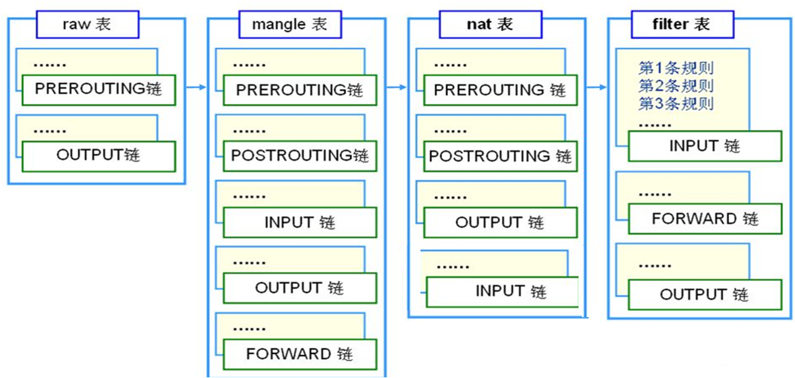
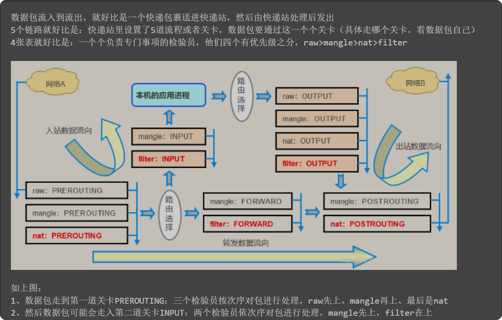
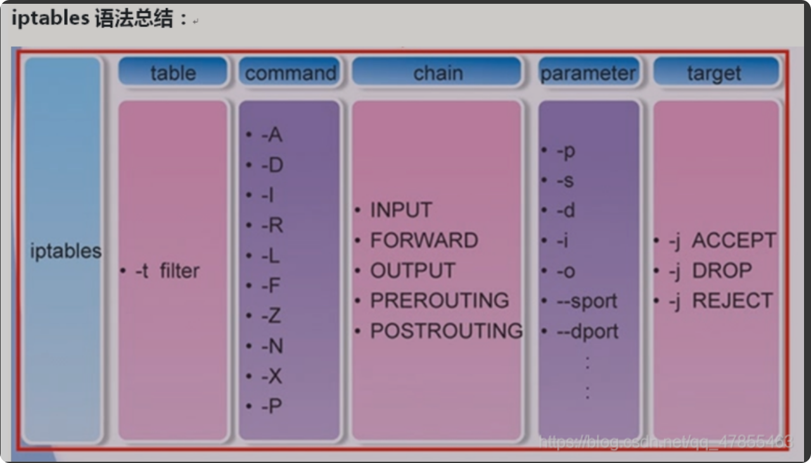
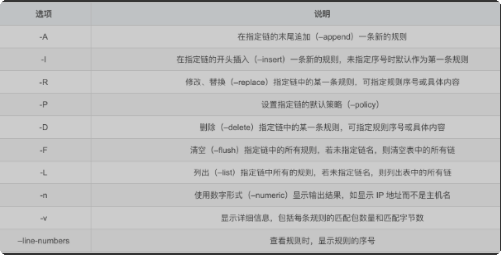
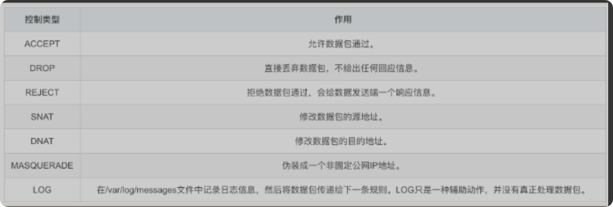
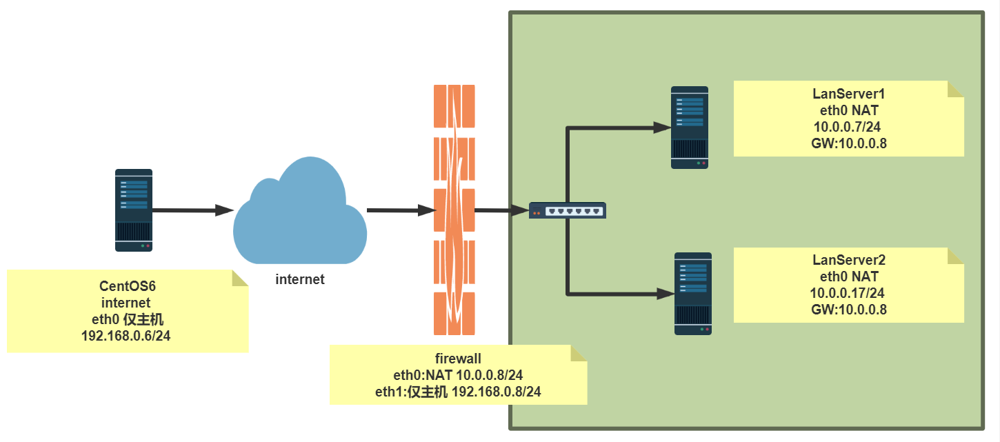
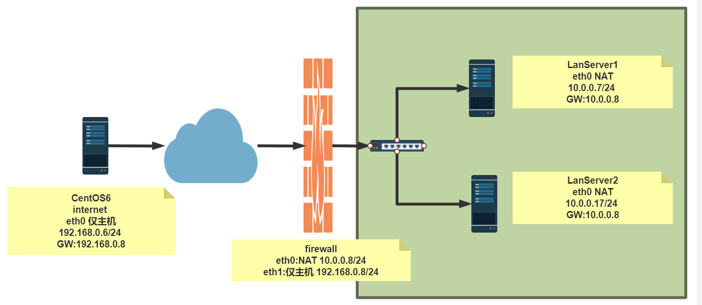
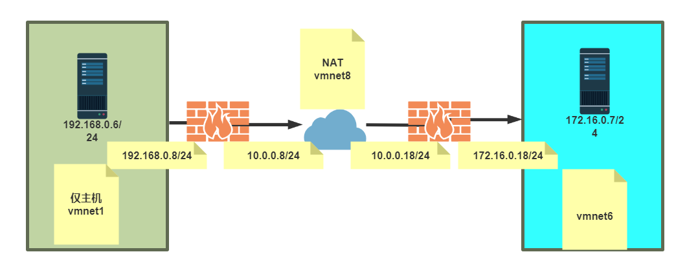

1 安全技术和防火墙 1.1 安全技术
入侵检测系统（Intrusion Detection Systems）：特点是不阻断任何网络访问，量化、定位来自内外网络的威胁情况，主要以提供报警和事后监督为主，提供有针对性的指导措施和安全决策依据,类似于监控系统一般采用旁路部署方式
入侵防御系统（Intrusion Prevention System）：以透明模式工作，分析数据包的内容如：溢出攻击、拒绝服务攻击、木马、蠕虫、系统漏洞等进行准确的分析判断，在判定为攻击行为后立即予以阻断，主动而有效的保护网络的安全，一般采用在线部署方式
防火墙（ FireWall ）：隔离功能，工作在网络或主机边缘，对进出网络或主机的数据包基于一定的规则检查，并在匹配某规则时由规则定义的行为进行处理的一组功能的组件，基本上的实现都是默认情况下关闭所有的通过型访问，只开放允许访问的策略,会将希望外网访问的主机放在DMZ(demilitarized zone)网络中
防水墙（Waterwall）：与防火墙相对，防水墙是一种防止内部信息泄漏的安全产品。它利用透明加解密，身份认证，访问控制和审计跟踪等技术手段，对涉密信息，重要业务数据和技术专利等敏感信息的存储，传播和处理过程，实施安全保护；最大限度地防止敏感信息泄漏、被破坏和违规外传，并完整记录涉及敏感信息的操作日志，以便日后审计。
1.2 防火墙的分类 按保护范围划分：
主机防火墙：服务范围为当前一台主机
网络防火墙：服务范围为防火墙一侧的局域网
按实现方式划分:
按网络协议划分：
包过滤防火墙
网络层对数据包进行选择，选择的依据是系统内设置的过滤逻辑，被称为访问控制列表（ACL），通过检查数据流中每个数据的源地址，目的地址，所用端口号和协议状态等因素，或他们的组合来确定是否允许该数据包通过
应用层防火墙
应用层防火墙/代理服务型防火墙，也称为代理服务器（Proxy Server)将所有跨越防火墙的网络通信链路分为两段内外网用户的访问都是通过代理服务器上的“链接”来实现
提示：现实生产环境中所使用的防火墙一般都是二者结合体，即先检查网络数据，通过之后再送到应用层去检查
1.3 防火墙的作用 防火墙的基本功能是监控和控制进出网络的数据流。它根据预先定义的安全规则来审查每一个数据包，这些规则可能基于IP地址、端口号、协议类型甚至是具体的内容。任何不符合规则的数据包都会被防火墙拦截，从而防止潜在的攻击和未经授权的访问。
除了基本的包过滤功能，现代防火墙还具备更高级的安全特性，如入侵检测系统（IDS）、入侵防御系统（IPS）和虚拟专用网络（VPN）等。这些功能使得防火墙成为了网络安全的第一道防线。
2 Linux 防火墙的基本认识 2.1 Netfilter Linux防火墙是由Netfilter组件提供的，Netfilter工作在内核空间，集成在linux内核中
Netfilter 是Linux 2.4.x之后新一代的Linux防火墙机制，是linux内核的一个子系统。Netfilter采用模块化设计，具有良好的可扩充性，提供扩展各种网络服务的结构化底层框架。Netfilter与IP协议栈是无缝契合，并允许对数据报进行过滤、地址转换、处理等操作
内核中netfilter相关的模块
1 2 3 4 5 [root@centos8 ~]#grep -m 10 NETFILTER /boot/config-4.18.0-193.el8.x86_64 [root@centos7 ~]#grep -m 10 NETFILTER /boot/config-3.10.0-1127.el7.x86_64 [root@centos6 ~]#grep -m 10 NETFILTER /boot/config-2.6.32-754.el6.x86_64 [root@ubuntu2004 ~]#grep -m 10 NETFILTER /boot/config-5.4.0-33-generic [root@ubuntu1804 ~]#grep -m 10 NETFILTER /boot/config-4.15.0-29-generic
2.2 防火墙工具介绍 2.2.1 iptables 由软件包iptables提供的命令行工具，工作在用户空间，用来编写规则，写好的规则被送往netfilter，告诉内核如何去处理信息包
范例：安装iptables的service包
1 2 3 4 5 6 7 8 9 10 11 12 13 14 15 [root@centos8 ~]#dnf -y install iptables-services [root@rocky86 ~]# rpm -q iptables iptables-1.8.4-22.el8.x86_64 root@ubuntu22:~# dpkg -l iptables Desired=Unknown/Install/Remove/Purge/Hold | Status=Not/Inst/Conf-files/Unpacked/halF-conf/Half-inst/trig-aWait/Trig-pend |/ Err?=(none)/Reinst-required (Status,Err: uppercase=bad) ||/ Name Version Architecture Description +++-==============-==============-============- ================================================= ii iptables 1.8.7-1ubuntu5 amd64 administration tools for packet filtering and NAT
2.2.2 firewalld 从CentOS 7 版开始引入了新的前端管理工具
软件包：
firewalld
firewalld-config
管理工具：
firewall-cmd 命令行工具
firewall-config 图形工作
1 2 3 4 5 6 7 8 9 10 11 12 [root@rocky86 ~]# rpm -q firewalld firewalld-0.9.3-13.el8.noarch root@ubuntu22:~# dpkg -l firewalld Desired=Unknown/Install/Remove/Purge/Hold | Status=Not/Inst/Conf-files/Unpacked/halF-conf/Half-inst/trig-aWait/Trig-pend |/ Err?=(none)/Reinst-required (Status,Err: uppercase=bad) ||/ Name Version Architecture Description +++-==============-============-============-================================= un firewalld <none> <none> (no description available)
2.2.3 nftables 此软件是CentOS 8 新特性,Nftables最初在法国巴黎的Netfilter Workshop 2008上发表，然后由长期的netfilter核心团队成员和项目负责人Patrick McHardy于2009年3月发布。它在2013年末合并到Linux内核中，自2014年以来已在内核3.13中可用。
它重用了netfilter框架的许多部分，例如连接跟踪和NAT功能。它还保留了命名法和基本iptables设计的几个部分，例如表，链和规则。就像iptables一样，表充当链的容器，并且链包含单独的规则，这些规则可以执行操作，例如丢弃数据包，移至下一个规则或跳至新链。
从用户的角度来看，nftables添加了一个名为nft的新工具，该工具替代了iptables，arptables和ebtables中的所有其他工具。从体系结构的角度来看，它还替换了内核中处理数据包过滤规则集运行时评估的那些部分
1 2 3 4 5 6 7 8 9 10 11 [root@rocky86 ~]# rpm -q nftables nftables-0.9.3-25.el8.x86_64 [root@ubuntu ~]# dpkg -l nftables Desired=Unknown/Install/Remove/Purge/Hold | Status=Not/Inst/Conf-files/Unpacked/halF-conf/Half-inst/trig-aWait/Trig-pend |/ Err?=(none)/Reinst-required (Status,Err: uppercase=bad) ||/ Name Version Architecture Description +++-==============-==============-============- ============================================================== ii nftables 1.0.2-1ubuntu2 amd64 Program to control packet filtering rules by Netfilter project
CentOS 8 支持三种防火墙服务
1 2 3 [root@centos8 ~]#systemctl status iptables.service [root@centos8 ~]#systemctl status firewalld.service [root@centos8 ~]#systemctl status nftables.service
ubuntu 中的防火墙工具
1 2 3 4 5 6 7 8 9 10 11 12 13 14 15 16 17 18 19 20 21 22 23 24 25 26 27 28 [root@ubuntu ~]# systemctl status ufw ● ufw.service - Uncomplicated firewall Loaded: loaded (/lib/systemd/system/ufw.service; enabled; vendor preset:enabled) Active: active (exited) since Thu 2023-06-08 08:51:58 CST; 5h 6min ago Docs: man:ufw(8) Process: 734 ExecStart=/lib/ufw/ufw-init start quiet (code=exited, status=0/SUCCESS) Main PID: 734 (code=exited, status=0/SUCCESS) CPU: 2ms Jun 08 08:51:58 ubuntu systemd[1]: Starting Uncomplicated firewall... Jun 08 08:51:58 ubuntu systemd[1]: Finished Uncomplicated firewall. [root@ubuntu ~]# ufw status Status: inactive [root@ubuntu ~]# ufw enable Command may disrupt existing ssh connections. Proceed with operation (y|n)? n Aborted [root@ubuntu ~]# systemctl status nftables.service ○ nftables.service - nftables Loaded: loaded (/lib/systemd/system/nftables.service; disabled; vendor preset: enabled) Active: inactive (dead) Docs: man:nft(8) http://wiki.nftables.org
2.3 netfilter 中五个勾子函数和报文流向 Netfilter在内核中选取五个位置放了五个hook(勾子) function(INPUT、OUTPUT、FORWARD、PREROUTING、POSTROUTING)，而这五个hook function向用户开放，用户可以通过一个命令工具（iptables）向其写入规则，内核中的勾子函数根据预设的规则进行工作，达到对流经的数据包进行过滤，拒绝，转发等功能。
由信息过滤表（table）组成，包含控制IP包处理的规则集（rules），规则被分组放在链（chain）上
特别说明
从 Linux kernel 4.2 版以后，netfilter 在prerouting 前加了一个 ingress 勾子函数。可以使用这个新的入口挂钩来过滤来自第2层的流量，这个新挂钩比预路由要早，基本上是 tc 命令（流量控制工具）的替代品。
三种报文流向
流入本机：PREROUTING –> INPUT–>用户空间进程
流出本机：用户空间进程 –>OUTPUT–> POSTROUTING
转发：PREROUTING –> FORWARD –> POSTROUTING
INPUT 链
该链用于处理进入本地系统的流量（即目标是本机的流量）。
所有到达本机的流量都会经过 INPUT 链进行检查 适用于例如 SSH、HTTP 等服务的连接请求
OUTPUT 链
该链用于处理从本地系统发出的流量（即源是本机的流量）。
所有由本机发出的流量都会经过 OUTPUT 链 适用于例如从本机访问外部网站的请求
FORWARD 链
该链用于处理被路由通过本机的流量（即流量不会到达本机，而是转发到其他网络）。
此链仅适用于做路由的机器 适用于例如路由器转发的流量
PREROUTING 链
该链用于在路由决策之前处理流量。
通常用于目标地址转换（DNAT），在数据包到达路由前修改其目标地址
适用于例如网络地址转换（NAT）时，修改目标地址的规则
POSTROUTING 链
该链用于在路由决策之后处理流量。
通常用于源地址转换（SNAT），在数据包离开本机前修改源地址
例如 NAT 中修改源地址的规则
2.4 iptables的组成 iptables由五个表table和五个链chain以及一些规则组成
链 chain：
五个表table：filter、nat、mangle、raw、security
filter：过滤规则表，根据预定义的规则过滤符合条件的数据包，默认表，实现防火墙功能
nat：network address translation 地址转换规则表，实现共享上网，端口和IP映射
mangle：修改数据标记位规则表，即对数据包进行重构或修改，比如服务类型、TTL（生存时间）等字段
raw：关闭启用的数据连接跟踪机制，加快封包穿越防火墙速度，决定了数据包是否应被状态跟踪机制（如连接跟踪）处理
security：用于强制访问控制（MAC）网络规则，由Linux安全模块（如SELinux）实现
表的优先级由高到低的顺序为
1 security -->raw-->mangle-->nat-->filter
表和链对应关系

filter表
INPUT：负责过滤所有目标地址是本机地址的数据包，通俗来讲，就是过滤进入主机的数据包（能否让数据包进入服务器）
FORWARD：路过，负责转发流经主机的数据包，起转发的作用，和NAT关系大，在LVS NAT模式中，net.ipv4.ip_forward=0
OUTPUT：处理所有源地址是本机地址的数据包，通俗来讲，就是处理从主机发出去的数据包，当数据包从本地主机发送至外部网络时，确定哪些本地系统发出的数据包可以被发送到外部网络
nat表
OUTPUT：和主机放出去的数据包有关，改变主机发出数据包的目的地址
PREROUTING：在数据包到达防火墙时，进行路由判断之前执行的规则，作用是改变数据包的目的地址、目的端口等
POSTROUTING：在数据包离开防火墙时进行路由判断之后执行的规则，作用是改变数据包的源地址、源端口等
数据包过滤匹配流程

内核中数据包的传输过程
当一个数据包进入网卡时，数据包首先进入PREROUTING链，内核根据数据包目的IP判断是否需要转送出去
如果数据包是进入本机的，数据包就会沿着图向下移动，到达INPUT链。数据包到达INPUT链后，任何进程都会收到它。本机上运行的程序可以发送数据包，这些数据包经过OUTPUT链，然后到达POSTROUTING链输出
如果数据包是要转发出去的，且内核允许转发，数据包就会向右移动，经过FORWARD链，然后到达POSTROUTING链输出
范例：查看表匹配哪些链
1 2 3 4 5 6 7 8 [root@centos8 ~]#iptables -vnL -t filter [root@centos8 ~]#iptables -vnL -t nat [root@centos8 ~]#iptables -vnL -t mangle [root@centos8 ~]#iptables -vnL -t raw [root@centos8 ~]#iptables -vnL -t security [root@centos6 ~]#iptables -vnL -t nat
3 iptables



3.1 iptables 规则说明 3.1.1 iptables 规则组成 规则rule：根据规则的匹配条件尝试匹配报文，对匹配成功的报文根据规则定义的处理动作作出处理，规则在链接上的次序即为其检查时的生效次序
匹配条件：默认为与条件，同时满足
基本匹配：IP，端口，TCP的Flags（SYN,ACK等）
扩展匹配：通过复杂高级功能匹配
处理动作：称为target，跳转目标
内建处理动作：ACCEPT,DROP,REJECT,SNAT,DNAT,MASQUERADE,MARK,LOG…
自定义处理动作：自定义chain，利用分类管理复杂情形
规则要添加在链上，才生效；添加在自定义链上不会自动生效
白名单:只有指定的特定主机可以访问,其它全拒绝
黑名单:只有指定的特定主机拒绝访问,其它全允许，默认方式
3.1.2 iptables规则添加时考量点
要实现哪种功能：判断添加在哪张表上
报文流经的路径：判断添加在哪个链上
报文的流向：判断源和目的
匹配规则：业务需要
3.1.3 本章学习环境准备 CentOS 7，8：
1 2 3 4 5 systemctl stop firewalld.service systemctl disable firewalld. service systemctl disable --now firewalld. service
CentOS 6：
1 2 service iptables stop chkconfig iptables off
注意：如果不是最小化安装，在禁用 frewalld 之后，再次重启还是能看到防火墙规则，这是由KVM启动的
1 2 [root@rocky86 ~]# yum remove qemu-kvm
Ubuntu
1 systemctl disable --now ufw
3.1.4 规则说明 iptables 防火墙中的规则，在生效时会按照顺序，从上往下生效，当前一条规则命中后，不再继续往下匹配。
如果多条规则里面，匹配条件中有交集，或者有包含关系，则这些规则，要注意前后顺序，范围小的，需要精确匹配的，要往前放，范围大的，往后放，负责兜底的，放在最后。
如果多条规则里面，匹配条件没有交集，彼此不会互相影响，则无所谓前后顺序，但是从效率上来讲，更容易命中，范围大的放在前面。
3.2 iptables 用法说明 格式
1 2 3 4 5 6 7 8 9 10 11 12 13 14 iptables [-t table] {-A|-C|-D} chain rule-specification iptables [-t table] -I chain [rulenum] rule-specification iptables [-t table] -R chain rulenum rule-specification iptables [-t table] -D chain rulenum iptables [-t table] -S [chain [rulenum]] iptables [-t table] {-F|-L|-Z} [chain [rulenum]] [options...] iptables [-t table] -N chain iptables [-t table] -X [chain] iptables [-t table] -P chain target iptables [-t table] -E old-chain-name new-chain-name rule-specification = [matches...] [target] match = -m matchname [per-match-options] target = -j targetname [per-target-options]
iptables命令格式详解
1 iptables [-t table] SUBCOMMAND chain [-m matchname [per-match-options]] -j targetname [per-target-options]
1、-t table：指定表
raw, mangle, nat, [filter]默认
2、SUBCOMMAND：子命令
（1）链管理类：
1 2 3 4 5 -N：new, 自定义一条新的规则链 -E：重命名自定义链；引用计数不为0的自定义链不能够被重命名，也不能被删除 -X：delete，删除自定义的空的规则链 -P：Policy，设置默认策略；对filter表中的链而言，其默认策略有：ACCEPT：接受, DROP：丢弃 -C：检查链上的规则是否正确
（2）查看类
1 2 3 4 5 6 7 8 9 10 11 -L：list, 列出指定鏈上的所有规则，本选项须置后 -n：numberic，以数字格式显示地址和端口号 -v：verbose，详细信息 -vv 更详细 -x：exactly，显示计数器结果的精确值,而非单位转换后的易读值 --line-numbers：显示规则的序号 -S selected,以iptables-save命令格式显示链上规则 常用组合 -vnL -vvnxL --line-numbers
范例：查看表匹配哪些链
在使用 -L 选项查看规则时，如果规则不为空，单独 -L 选项显示时有可能会很慢，这是因为需要对主机名和服务名进行反解导致的，可以加 -n 选项来规避
默认 filter 表，可以不指定
1 2 3 4 5 6 7 8 9 10 11 12 13 14 15 16 17 18 19 [root@centos8 ~]#iptables -vnL -t filter Chain INPUT (policy ACCEPT 0 packets, 0 bytes) pkts bytes target prot opt in out source destination Chain FORWARD (policy ACCEPT 0 packets, 0 bytes) pkts bytes target prot opt in out source destination Chain OUTPUT (policy ACCEPT 0 packets, 0 bytes) pkts bytes target prot opt in out source destination pkts：在当前规则中，被命中的数据包数量 bytes：在当前规则中，被命中的总流量大小 target：动作，目标，DROP 表示丢弃 prot：具体协议 opt：选项 in ：数据从哪个网络设备进来out：数据从哪个网络设备上出去 source ：源，可以是主机IP，网段，anywhere 表示不受限 destination：目标，可以是主机IP，网段，anywherer 表示不受限
范例：指定表和链
1 [root@ubuntu ~]# iptables -t filter -vnL INPUT
（3）规则管理类
1 2 3 4 5 6 7 8 9 10 11 -A：append，往链上追加规则 -I：insert, 插入，要指明插入至的规则编号，默认为第一条 -D：delete，删除 (1) 指明规则序号 (2) 指明规则本身 -R：replace，替换指定链上的指定规则编号 -F：flush，清空指定的规则链 -Z：zero，置零 iptables的每条规则都有两个计数器 (1) 匹配到的报文的个数 (2) 匹配到的所有报文的大小之和
范例
1 2 3 4 5 6 7 iptables -t filter -A INPUT -s 10.0.0.1 -j ACCEPT iptables -t filter -A INPUT -d 10.0.0.1 -j ACCEPT
范例
1 2 3 4 5 6 7 8 9 10 11 12 13 14 15 16 17 18 19 20 21 22 23 24 25 26 [root@ubuntu ~]# iptables -t filter -A INPUT -s 10.0.0.150 -j DROP [root@ubuntu ~]# iptables -t filter -A INPUT -s 10.0.0.0/24 -j DROP [root@ubuntu ~] iptables -t filter -D INPUT 3 [root@ubuntu ~]# iptables -t filter -I INPUT -s 127.0.0.1 -j ACCEPT [root@ubuntu ~]# iptables -t filter -I INPUT -i lo -j ACCEPT [root@ubuntu ~]# iptables -t filter -R INPUT 1 -s 127.0.0.1 -j ACCEPT [root@ubuntu ~]# iptables -t filter -Z INPUT 1 [root@ubuntu ~]# iptables -t filter -Z [root@ubuntu ~]# iptables -P FORWARD DROP
范例：黑名单和白名单
1 2 3 4 5 6 7 8 9 10 11 12 13 14 15 16 [root@ubuntu ~]# iptables -t filter -A INPUT -s 10.0.0.1 -j ACCEPT [root@ubuntu ~]# iptables -t filter -A INPUT -j REJECT [root@ubuntu ~]# iptables -t filter -nL INPUT --line-number Chain INPUT (policy ACCEPT) num target prot opt source destination 1 ACCEPT all -- 10.0.0.1 0.0.0.0/0 2 REJECT all -- 0.0.0.0/0 0.0.0.0/0 reject-with icmp-port-unreachable [root@ubuntu ~]# ping 127.1 PING 127.1 (127.0.0.1) 56(84) bytes of data.
3、chain：
PREROUTING，INPUT，FORWARD，OUTPUT，POSTROUTING
4、匹配条件
5、处理动作：
1 -j targetname [per-target-options]
（1）简单动作
1 2 3 ACCEPT 接受 DROP 抛弃，不回应 REJECT 拒绝，有回应
（2）扩展动作
1 2 3 4 5 6 7 8 9 REJECT：--reject-with:icmp-port-unreachable默认 RETURN：返回调用链 REDIRECT：端口重定向 LOG：记录日志，dmesg MARK：做防火墙标记 DNAT：目标地址转换 SNAT：源地址转换 MASQUERADE：地址伪装 自定义链
制定规则时先把本机访问和自身访问开了，免得后续制定其他规则时本机不能访问和自己不能访问自己
1 2 iptables -A INPUT -s windowsip -j ACCEPT iptables -A INPUT -i lo -j ACCEPT
3.3 iptables 基本匹配条件 基本匹配条件：无需加载模块，由iptables/netfilter自行提供
1 2 3 4 5 6 7 [!] -s, --source address[/mask][,...]：源IP地址或者不连续的IP地址 [!] -d, --destination address[/mask][,...]：目标IP地址或者不连续的IP地址 [!] -p, --protocol protocol：指定协议，可使用数字如0（all） protocol: tcp, udp, icmp, icmpv6, udplite,esp, ah, sctp, mh or“all“ 参看：/etc/protocols [!] -i, --in-interface name：报文流入的接口；只能应用于数据报文流入环节，只应用于INPUT、FORWARD、PREROUTING链 [!] -o, --out-interface name：报文流出的接口；只能应用于数据报文流出的环节，只应用于FORWARD、OUTPUT、POSTROUTING链
范例
1 2 3 4 5 6 [root@centos8 ~]#iptables -A INPUT -s 10.0.0.6,10.0.0.10 -j REJECT [root@centos8 ~]#iptables -I INPUT -i lo -j ACCEPT [root@centos8 ~]#curl 127.0.0.1 10.0.0.8 [root@centos8 ~]#curl 10.0.0.8 10.0.0.8
范例：根据协议过滤
1 2 [root@centos8 ~]#iptables -I INPUT 2 -s 10.0.0.6 ! -p icmp -j ACCEPT
范例：规则取反
1 2 [root@ubuntu ~]# iptables -t filter -R INPUT 2 ! -s 10.0.0.150 -j REJECT
范例：根据目标地址匹配（目标地址是机器上有多网卡或者一网卡有多个地址时才使用）
1 2 3 4 5 6 7 8 9 10 11 12 13 14 15 16 17 18 19 20 21 22 23 24 25 26 27 28 29 30 31 32 33 34 35 36 37 38 39 40 41 42 43 44 45 46 47 48 49 50 51 52 53 54 55 [root@rocky8 ~]#ip a a 10.0.0.10/24 dev eth0 label eth0:1 [root@rocky8 ~]#ip a 1: lo: <LOOPBACK,UP,LOWER_UP> mtu 65536 qdisc noqueue state UNKNOWN group default qlen 1000 link /loopback 00:00:00:00:00:00 brd 00:00:00:00:00:00 inet 127.0.0.1/8 scope host lo valid_lft forever preferred_lft forever inet6 ::1/128 scope host valid_lft forever preferred_lft forever 2: eth0: <BROADCAST,MULTICAST,UP,LOWER_UP> mtu 1500 qdisc mq state UP group default qlen 1000 link /ether 00:0c:29:d2:a3:ac brd ff:ff:ff:ff:ff:ff inet 10.0.0.179/24 brd 10.0.0.255 scope global noprefixroute eth0 valid_lft forever preferred_lft forever inet 10.0.0.10/24 scope global secondary eth0:1 valid_lft forever preferred_lft forever inet6 fe80::20c:29ff:fed2:a3ac/64 scope link valid_lft forever preferred_lft forever [root@centos8 ~]#ping 10.0.0.10 PING 10.0.0.10 (10.0.0.10) 56(84) bytes of data. 64 bytes from 10.0.0.10: icmp_seq=1 ttl=64 time =1.23 ms 64 bytes from 10.0.0.10: icmp_seq=2 ttl=64 time =10.8 ms [root@rocky8 ~]#iptables -A INPUT -d 10.0.0.10 -j REJECT [root@rocky8 ~]#iptables -vnL Chain INPUT (policy ACCEPT 0 packets, 0 bytes) pkts bytes target prot opt in out source destination 0 0 REJECT all -- * * 0.0.0.0/0 10.0.0.10 reject-with i [root@centos8 ~]#ping 10.0.0.10 PING 10.0.0.10 (10.0.0.10) 56(84) bytes of data. From 10.0.0.10 icmp_seq=1 Destination Port Unreachable From 10.0.0.10 icmp_seq=2 Destination Port Unreachable [root@centos8 ~]#ssh 10.0.0.10 ^C [root@rocky8 ~]#iptables -R INPUT 1 -d 10.0.0.10 -p icmp -j REJECT [root@centos8 ~]#ping 10.0.0.10 [root@centos8 ~]#ping 10.0.0.10 PING 10.0.0.10 (10.0.0.10) 56(84) bytes of data. From 10.0.0.10 icmp_seq=1 Destination Port Unreachable From 10.0.0.10 icmp_seq=2 Destination Port Unreachable [root@centos8 ~]#ssh 10.0.0.10 The authenticity of host '10.0.0.10 (10.0.0.10)' can't be established. ECDSA key fingerprint is SHA256:LjI4Fn8mPxXYJjqouGvxROkMgF9Nv5fDZpHKfzM8hRs. Are you sure you want to continue connecting (yes/no/[fingerprint])?
3.4 iptables 扩展匹配条件 扩展匹配条件：需要加载扩展模块（/usr/lib64/xtables/*.so），方可生效
扩展模块的查看帮助 ：man iptables-extensions
扩展匹配条件：
3.4.1 隐式扩展 iptables 在使用 -p 选项指明了特定的协议时，无需再用 -m 选项指明扩展模块的扩展机制，不需要手动加载扩展模块
tcp，upd，icmp 这三个协议是可以用 -m 指定的模块，但同时，也可以在基本匹配里面用 -p 来指定这几个协议
tcp 协议的扩展选项
1 2 3 4 5 6 7 8 9 10 11 [!] --source-port, --sport port[:port]：匹配报文源端口,可为端口连续范围 [!] --destination-port,--dport port[:port]：匹配报文目标端口,可为连续范围 [!] --tcp-flags mask comp mask 需检查的标志位列表，用,分隔 , 例如 SYN,ACK,FIN,RST comp 在mask列表中必须为1的标志位列表，无指定则必须为0，用,分隔tcp协议的扩展选项 --tcp-flags SYN,ACK,FIN,RST SYN --tcp-flags SYN,ACK,FIN,RST SYN,ACK [!] --syn：用于匹配第一次握手, 相当于：--tcp-flags SYN,ACK,FIN,RST SYN --tcp-flags ALL ALL --tcp_flags ALL NONE
范例：用tcp 协议和目标端口拒绝ssh服务
1 2 [root@ubuntu ~]# iptables -t filter -A INPUT -s 10.0.0.150 -d 10.0.0.110 -p tcp --dport 21:23 -j REJECT
范例：拒绝ssh服务，接受http服务
1 2 3 4 5 6 7 8 9 10 11 12 13 14 15 16 17 18 19 20 21 22 23 24 25 [root@rocky8 ~]#yum -y install nginx [root@rocky8 ~]#systemctl start nginx [root@rocky8 ~]#ss -ntl State Recv-Q Send-Q Local Address:Port Peer Address:Port Process LISTEN 0 128 0.0.0.0:80 0.0.0.0:* LISTEN 0 128 0.0.0.0:22 0.0.0.0:* LISTEN 0 128 [::]:80 [::]:* LISTEN 0 128 [::]:22 [::]:* [root@rocky8 ~]#iptables -A INPUT -s 10.0.0.1 -j ACCEPT [root@rocky8 ~]#iptables -A INPUT -p tcp --dport 80 -j ACCEPT [root@rocky8 ~]#iptables -A INPUT -p tcp -d 10.0.0.179 -j REJECT(iptables -A INPUT -j REJECT) [root@rocky8 ~]#iptables -vnL Chain INPUT (policy ACCEPT 0 packets, 0 bytes) pkts bytes target prot opt in out source destination 288 17760 ACCEPT all -- * * 10.0.0.1 0.0.0.0/0 0 0 ACCEPT tcp -- * * 0.0.0.0/0 0.0.0.0/0 tcp dpt:80 0 0 REJECT tcp -- * * 0.0.0.0/0 10.0.0.179 reject-with icmp-port-unreachable ( 0 0 REJECT all -- * * 0.0.0.0/0 0.0.0.0/0 reject-with icmp-port-unreachable ) [root@centos8 ~]#ssh 10.0.0.179 ssh: connect to host 10.0.0.179 port 22: Connection refused [root@centos8 ~]#curl 10.0.0.179 <!DOCTYPE html PUBLIC "-//W3C//DTD XHTML 1.1//EN" "http://www.w3.org/TR/xhtml11/DTD/xhtml11.dtd" > ..........
范例：根据TCP标志位过滤
1 2 [root@ubuntu ~]# iptables -t filter -A INPUT -s 10.0.0.150 -d 10.0.0.110 -p tcp --tcp-flags SYN,ACK,FIN,RST SYN -j REJECT
范例：TCP隐式扩展
1 iptables -A INPUT -p tcp --dport 80 -j ACCEPT
udp 协议的扩展选项
1 2 [!] --source-port, --sport port[:port]：匹配报文的源端口或端口范围 [!] --destination-port,--dport port[:port]：匹配报文的目标端口或端口范围
icmp 协议的扩展选项
1 2 3 4 [!] --icmp-type {type [/code]|typename} type /code 0/0 echo-reply 8/0 echo-request
范例
1 2 3 [root@centos8 ~]#iptables -A INPUT -s 10.0.0.6 -p tcp --dport 21:23 -j REJECT [root@centos8 ~]#iptables -A INPUT -p tcp --syn -j REJECT [root@centos8 ~]#iptables -A INPUT -s 10.0.0.6 -p icmp --icmp-type 8 -j REJECT
范例：我能ping对方，对方不能ping我
1 2 3 4 iptables -A INPUT -s 10.0.0.0/24 -j REJECT iptables -A INPUT -p icmp --icmp-type 0 -j ACCEP
范例：拒绝ICMP的请求包
1 [root@ubuntu ~]# iptables -t filter -A INPUT -s 10.0.0.150 -p icmp --icmp-type 8 -j REJECT
3.4.2 显式扩展及相关模块 显示扩展即必须使用-m选项指明要调用的扩展模块名称，需要手动加载扩展模块
1 [-m matchname [per-match-options]]
扩展模块的使用帮助：
3.4.2.1 multiport扩展 以离散方式定义多端口匹配,最多指定15个端口
1 2 3 4 5 6 7 8 [!] --source-ports,--sports port[,port|,port:port]... [!] --destination-ports,--dports port[,port|,port:port]... [!] --ports port[,port|,port:port]...
范例
1 2 [root@centos8 ~]#iptables -A INPUT -s 172.16.0.0/16 -d 172.16.100.10 -p tcp -m multiport --dports 20:22,80 -j ACCEPT [root@centos8 ~]#iptables -A INPUT -s 10.0.0.6 -p tcp -m multiport --dports 445,139 -j REJECT
3.4.2.2 iprange扩展 指明连续的（但一般不是整个网络）ip地址范围
1 2 [!] --src-range from[-to] 源IP地址范围 [!] --dst-range from[-to] 目标IP地址范围
范例：
1 iptables -A INPUT -d 172.16.1.100 -p tcp --dport 80 -m iprange --src-range 172.16.1.5-172.16.1.10 -j DROP
3.4.2.3 mac扩展 mac 模块可以指明源MAC地址,，适用于：PREROUTING, FORWARD，INPUT chains
1 [!] --mac-source XX:XX:XX:XX:XX:XX
范例
1 2 3 4 [root@ubuntu ~]# iptables -t filter -A INPUT -d 10.0.0.110 -m mac --mac-source 00:0c:29:f3:44:9a -j ACCEPT [root@ubuntu ~]# iptables -t filter -A INPUT -d 10.0.0.110 -j REJECT
3.4.2.4 string扩展 对报文中的应用层数据做字符串模式匹配检测
1 2 3 4 5 6 7 --algo {bm|kmp} 字符串匹配检测算法 bm：Boyer-Moore kmp：Knuth-Pratt-Morris --from offset 开始偏移 --to offset 结束偏移 [!] --string pattern 要检测的字符串模式 [!] --hex-string pattern 要检测字符串模式，16进制格式
范例：数据报文结构中，前62位都是报文头(22位），IP（10位)和TCP(20位)，不会有敏感词汇，所以从第62位开始检查
请求报文中（INPUT）访问的形式是index.html，不会带有敏感词汇，是回来的报文带有（OUTPUT）
1 2 3 4 5 6 7 8 9 10 11 12 13 14 15 16 [root@rocky ~]# curl 10.0.0.206/bd.html baidu [root@rocky ~]# curl 10.0.0.206/gg.html google [root@ubuntu ~]# iptables -t filter -A OUTPUT -m string --algo kmp --from 62 --string "google" -j REJECT [root@rocky ~]# curl 10.0.0.110/bd.html baidu [root@rocky ~]# curl 10.0.0.110/gg.html [root@rocky ~]# curl 10.0.0.110/GG.html GOOGLE
3.4.2.5 time扩展 注意：CentOS 8 此模块有问题
根据将报文到达的时间与指定的时间范围进行匹配
1 2 3 4 5 6 7 8 9 --datestart YYYY[-MM[-DD[Thh[:mm[:ss]]]]] 日期 --datestop YYYY[-MM[-DD[Thh[:mm[:ss]]]]] --timestart hh:mm[:ss] 时间 --timestop hh:mm[:ss] [!] --monthdays day[,day...] 每个月的几号 [!] --weekdays day[,day...] 星期几，1 – 7 分别表示星期一到星期日 --kerneltz：内核时区（当地时间），不建议使用，CentOS 7版本以上系统默认为 UTC 注意： centos6 不支持kerneltz ，--localtz指定本地时区(默认) 说明：UTC时间在原来时间上减8
范例: CentOS 8 的 time模块问题
1 2 3 4 [root@centos8 ~]#rpm -ql iptables |grep time /usr/lib64/xtables/libxt_time.so [root@centos8 ~]#iptables -A INPUT -m time --timestart 12:30 --timestop 13:30 -j ACCEPT iptables v1.8.4 (nf_tables): Couldn't load match `time' :No such file or directory
范例
1 2 3 4 5 6 7 8 9 10 11 12 13 14 15 16 17 18 [root@ubuntu ~]# iptables -t filter -A INPUT -m time --timestart 01:00 --timestop 14:00 -s 10.0.0.150 -j REJECT [root@rocky ~]# ping 10.0.0.206 -c1 PING 10.0.0.206 (10.0.0.206) 56(84) bytes of data. From 10.0.0.206 icmp_seq=1 Destination Port Unreachable [root@ubuntu ~]# date +"%F %T" 2023-06-10 21:02:46 [root@ubuntu ~]# date -s "+1 hour" Sat Jun 10 10:03:09 PM CST 2023 [root@ubuntu ~]# date +"%F %T" 2023-06-10 22:03:11 [root@rocky ~]# ping 10.0.0.206 -c1 PING 10.0.0.206 (10.0.0.206) 56(84) bytes of data. 64 bytes from 10.0.0.206: icmp_seq=1 ttl=64 time =0.573 ms
3.4.2.6 connlimit扩展 根据每客户端IP做并发连接数数量匹配
可防止Dos(Denial of Service，拒绝服务)攻击
1 2 --connlimit-upto N --connlimit-above N
范例
1 2 iptables -A INPUT -d 172.16.100.10 -p tcp --dport 22 -m connlimit --connlimit-above 2 -j REJECT
3.4.2.7 limit扩展 基于收发报文的速率做匹配 , 令牌桶过滤器（限制流量）
connlimit 扩展是限制单个客户端对服务器的并发连接数，limit 扩展是限制服务器上所有的连接数
1 2 --limit-burst number --limit
范例
1 2 3 4 5 6 7 8 9 10 11 12 13 14 15 16 17 18 19 20 21 22 23 24 25 26 27 28 29 [root@centos8 ~]#iptables -A INPUT -p icmp -m limit --limit-burst 10 --limit 20/minute -j ACCEPT [root@centos8 ~]#iptables -A INPUT -p icmp -j REJECT [root@centos6 ~]#ping 10.0.0.8 PING 192.168.39.8 (192.168.39.8) 56(84) bytes of data. 64 bytes from 192.168.39.8: icmp_seq=1 ttl=64 time =0.779 ms 64 bytes from 192.168.39.8: icmp_seq=2 ttl=64 time =0.436 ms 64 bytes from 192.168.39.8: icmp_seq=3 ttl=64 time =0.774 ms 64 bytes from 192.168.39.8: icmp_seq=4 ttl=64 time =0.391 ms 64 bytes from 192.168.39.8: icmp_seq=5 ttl=64 time =0.441 ms 64 bytes from 192.168.39.8: icmp_seq=6 ttl=64 time =0.356 ms 64 bytes from 192.168.39.8: icmp_seq=7 ttl=64 time =0.553 ms 64 bytes from 192.168.39.8: icmp_seq=8 ttl=64 time =0.458 ms 64 bytes from 192.168.39.8: icmp_seq=9 ttl=64 time =0.459 ms 64 bytes from 192.168.39.8: icmp_seq=10 ttl=64 time =0.479 ms 64 bytes from 192.168.39.8: icmp_seq=11 ttl=64 time =0.450 ms 64 bytes from 192.168.39.8: icmp_seq=12 ttl=64 time =0.471 ms 64 bytes from 192.168.39.8: icmp_seq=13 ttl=64 time =0.531 ms 64 bytes from 192.168.39.8: icmp_seq=14 ttl=64 time =0.444 ms From 192.168.39.8 icmp_seq=15 Destination Port Unreachable 64 bytes from 192.168.39.8: icmp_seq=16 ttl=64 time =0.668 ms From 192.168.39.8 icmp_seq=17 Destination Port Unreachable From 192.168.39.8 icmp_seq=18 Destination Port Unreachable 64 bytes from 192.168.39.8: icmp_seq=19 ttl=64 time =0.692 ms From 192.168.39.8 icmp_seq=20 Destination Port Unreachable From 192.168.39.8 icmp_seq=21 Destination Port Unreachable 64 bytes from 192.168.39.8: icmp_seq=22 ttl=64 time =0.651 ms
3.4.2.8 state扩展 state 扩展模块，可以根据”连接追踪机制“去检查连接的状态，较耗资源
conntrack机制：追踪本机上的请求和响应之间的关系
格式
state状态类型：
NEW：新发出请求；连接追踪信息库中不存在此连接的相关信息条目，因此，将其识别为第一次发出的请求
ESTABLISHED：NEW状态之后，连接追踪信息库中为其建立的条目失效之前期间内所进行的通信状态
RELATED：新发起的但与已有连接相关联的连接，如：ftp协议中的数据连接与命令连接之间的关系
INVALID：无效的连接，如flag标记不正确
UNTRACKED：未进行追踪的连接，如：raw表中关闭追踪
查看是否启用了连接追踪机制
1 2 3 4 5 6 7 [root@rocky ~]# lsmod | grep nf_conntrack [root@rocky ~]# cat /proc/net/nf_conntrack
已经追踪到的并记录下来的连接信息库
1 2 3 4 5 6 7 8 9 10 11 [root@centos8 ~]#cat /proc/net/nf_conntrack ipv4 2 icmp 1 29 src=10.0.0.206 dst=10.0.0.150 type =8 code=0 id =1 src=10.0.0.150 dst=10.0.0.206 type =0 code=0 id =1 mark=0 zone=0 use=2 ipv4 2 tcp 6 299 ESTABLISHED src=10.0.0.150 dst=10.0.0.1 sport=22 dport=51848 src=10.0.0.1 dst=10.0.0.150 sport=51848 dport=22 [ASSURED] mark=0 zone=0 use=2 ipv4 2 icmp 1 29 ESTABLISHED
连接追踪功能所能够容纳的最大连接数量
1 2 3 4 5 [root@centos8 ~]#cat /proc/sys/net/netfilter/nf_conntrack_max 26624 [root@centos8 ~]#cat /proc/sys/net/nf_conntrack_max 26624
己追踪的连接数量
1 2 [root@centos8 ~]#cat /proc/sys/net/netfilter/nf_conntrack_count 10
不同的协议的连接追踪时长，单位为秒，超时后会踢出己监控的队列
1 [root@centos8 ~]#ll /proc/sys/net/netfilter/*_timeout_*
说明：
连接跟踪，需要加载模块： modprobe nf_conntrack_ipv4
当服务器连接多于最大连接数时dmesg 可以观察到 ：kernel: ip_conntrack: table full, dropping
packet错误,并且导致建立TCP连接很慢。
各种状态的超时后，链接会从表中删除
范例: 不允许远程主机 10.0.0.7 访问本机,但本机可以访问10.0.0.7
1 2 3 4 5 6 7 8 [root@centos8 ~]#iptables -S -P INPUT ACCEPT -P FORWARD ACCEPT -P OUTPUT ACCEPT -A INPUT -s 10.0.0.1/32 -j ACCEPT -A INPUT -m state --state ESTABLISHED -j ACCEPT -A INPUT ! -s 10.0.0.7/32 -m state --state NEW -j ACCEPT -A INPUT -j REJECT --reject-with icmp-port-unreachable
范例
1 2 iptables -A INPUT -d 172.16.1.10 -p tcp -m multiport --dports 22,80 -m state --state NEW,ESTABLISHED -j ACCEPT iptables -A OUTPUT -s 172.16.1.10 -p tcp -m multiport --sports 22,80 -m state --state ESTABLISHED -j ACCEPT
范例：新用户不能连，老用户可以连
1 2 3 4 5 6 7 8 9 10 11 12 [root@centos7 ~]#ping 10.0.0.176 PING 10.0.0.176 (10.0.0.176) 56(84) bytes of data. 64 bytes from 10.0.0.176: icmp_seq=1 ttl=64 time =0.830 ms [root@centos8 ~]#iptables -A INPUT -m state --state ESTABLISHED -j ACCEPT [root@centos8 ~]#iptables -A INPUT -m state --state NEW -j REJECT [root@rocky8 ~]#ping 10.0.0.176 PING 10.0.0.176 (10.0.0.176) 56(84) bytes of data. From 10.0.0.176 icmp_seq=1 Destination Port Unreachable
案例：开放被动模式的ftp服务
CentOS 8 此模块有bug
(1) 装载ftp连接追踪的专用模块：
跟踪模块路径： /lib/modules/kernelversion/kernel/net/netfilter
1 2 3 vim /etc/sysconfig/iptables-config IPTABLES_MODULES=“nf_conntrack_ftp" modprobe nf_conntrack_ftp
(2) 放行请求报文：
命令连接：NEW, ESTABLISHED
数据连接：RELATED, ESTABLISHED
1 2 iptables -I INPUT -d LocalIP -p tcp -m state --state ESTABLISHED,RELATED -j ACCEPT iptables -A INPUT -d LocalIP -p tcp --dport 21 -m state --state NEW -j ACCEPT
(3) 放行响应报文：
范例：开放被动模式的ftp服务示例
1 iptables -I OUTPUT -s LocalIP -p tcp -m state --state ESTABLISHED -j ACCEPT
范例：开放被动模式的ftp服务示例
1 2 3 4 5 6 7 8 9 10 yum install vsftpd systemctl start vsftpd modprobe nf_conntrack_ftp iptables -F iptables -A INPUT -m state --state ESTABLISHED,RELATED -j ACCEPT iptables -A INPUT -p tcp --dport 21 -m state --state NEW -j ACCEPT iptables -A OUTPUT -m state --state ESTABLISHED -j ACCEPT iptables -P INPUT DROP iptables -P OUTPUT DROP iptables -vnL
3.5 iptables自定义链 iptables 中除了系统自带的五个链之外，还可以自定义链，来实现将规则进行分组，重复调用的目的。自定义链添加规则之后，要作为系统链的 target 与之关联，才能起到作用
生产中频繁要改的规则可以放在自定义链中，不需要放在主链中，防止修改时出错误，修改时直接修改自定义链，不用修改主链
1 2 3 4 iptables -N WEB_CHAIN iptables -A WEB_CHAIN -s 10.0.0.6 -p tcp -m multiport --dports80,443 -j REJECT iptables -A INPUT -j WEB_CHAIN
范例: 创建自定义链实现WEB的访问控制
1 2 3 4 5 6 7 8 9 10 11 12 13 14 15 16 17 18 19 20 21 22 23 24 25 26 27 28 29 30 31 32 33 34 [root@centos8 ~]#iptables -N web_chain [root@centos8 ~]#iptables -E web_chain WEB_CHAIN [root@centos8 ~]#iptables -A WEB_CHAIN -p tcp -m multiport --dports 80,443,8080 -j ACCEPT [root@centos8 ~]#iptables -I INPUT 3 -s 10.0.0.0/24 -j WEB_CHAIN [root@centos8 ~]#iptables -A WEB_CHAIN -p icmp -j ACCEPT [root@centos8 ~]#iptables -I WEB_CHAIN 2 -s 10.0.0.6 -j RETURN [root@centos8 ~]#iptables -vnL --line-numbers Chain INPUT (policy ACCEPT 0 packets, 0 bytes) num pkts bytes target prot opt in out source destination 1 10 867 ACCEPT all -- lo * 0.0.0.0/0 0.0.0.0/0 2 5637 423K ACCEPT all -- * * 10.0.0.1 0.0.0.0/0 3 248 20427 WEB_CHAIN all -- * * 10.0.0.0/24 0.0.0.0/0 4 4278 248K REJECT all -- * * 0.0.0.0/0 0.0.0.0/0 reject-with icmp-port-unreachable Chain FORWARD (policy ACCEPT 0 packets, 0 bytes) num pkts bytes target prot opt in out source destination Chain OUTPUT (policy ACCEPT 0 packets, 0 bytes) num pkts bytes target prot opt in out source destination Chain WEB_CHAIN (1 references) num pkts bytes target prot opt in out source destination 1 36 2619 ACCEPT tcp -- * * 0.0.0.0/0 0.0.0.0/0 multiport dports 80,443,8080 2 16 1344 RETURN all -- * * 10.0.0.6 0.0.0.0/0 3 184 15456 ACCEPT icmp -- * * 0.0.0.0/0 0.0.0.0/0 [root@centos6 ~]#curl 10.0.0.8 centos8 website [root@centos6 ~]#curl 10.0.0.8 centos8 website [root@centos6 ~]#ping -c1 10.0.0.8
范例: 删除自定义链
1 2 3 4 5 6 7 8 9 10 11 12 13 14 15 16 17 18 19 20 21 22 23 24 25 26 27 [root@centos8 ~]#iptables -X WEB_CHAIN iptables v1.8.4 (nf_tables): CHAIN_USER_DEL failed (Device or resource busy):chain WEB_CHAIN [root@centos8 ~]#iptables -D INPUT 3 [root@centos8 ~]#iptables -X WEB_CHAIN iptables v1.8.4 (nf_tables): CHAIN_USER_DEL failed (Device or resource busy):chain WEB_CHAIN [root@centos8 ~]#iptables -F WEB_CHAIN [root@centos8 ~]#iptables -L WEB_CHAIN Chain WEB_CHAIN (0 references) target prot opt source destination [root@centos8 ~]#iptables -X WEB_CHAIN [root@centos8 ~]#iptables -vnL --line-numbers Chain INPUT (policy ACCEPT 0 packets, 0 bytes) num pkts bytes target prot opt in out source destination 1 10 867 ACCEPT all -- lo * 0.0.0.0/0 0.0.0.0/0 2 5824 437K ACCEPT all -- * * 10.0.0.1 0.0.0.0/0 3 4279 248K REJECT all -- * * 0.0.0.0/0 0.0.0.0/0 reject-with icmp-port-unreachable Chain FORWARD (policy ACCEPT 0 packets, 0 bytes) num pkts bytes target prot opt in out source destination Chain OUTPUT (policy ACCEPT 0 packets, 0 bytes) num pkts bytes target prot opt in out source destination
3.6 Target 格式
1 -j targetname [per-target-options]
target 包括以下类型
自定义链
ACCEPT：允许通过，命中此规则后，不再对比当前链的其它规则，进入下一个链
DROP：丢弃，命中此规则后，该连接直接中断，发送方收不到任何回应
REJECT：拒绝，命中此规则后，该连接直接中断，发送方能收到拒绝回应
RETURN：返回，在当前链中不再继续匹配，返回到主链，一般用于自定义规则链中，假如input链定义了第一条和第二条和第四条规则 第三条是自定义链 自定义链有三条规则 如果自定义链中第二条规则加了return 数据报文碰到return并满足 就不会执行自定义链的第三条规则 而是执行input链的第四条规则
SNAT：源IP地址转换
DNAT：目标IP地址转换
REDIRECT：本机端口转换
MASQUERADE：源IP地址动态转换
LOG：非中断target,本身不拒绝和允许,放在拒绝和允许规则前，将被命中的数据的日志记录在/var/log/messages系统日志中
–log-level level：级别： debug，info，notice, warning, error, crit, alert,emerg
–log-prefix prefix：日志前缀，用于区别不同的日志，最多29个字符
范例：记录日志
1 2 3 4 5 6 7 [root@centos8 ~]#iptables -I INPUT -s 10.0.0.0/24 -p tcp -m multiport --dports 80,21,22,23 -m state --state NEW -j LOG --log-prefix "new connections: " [root@centos8 ~]#tail -f /var/log/messages Mar 19 18:41:07 centos8 kernel: iptables tcp connection: IN=eth0 OUT= MAC=00:0c:29:f8:5d:b7:00:50:56:c0:00:08:08:00 SRC=10.0.0.1 DST=10.0.0.8 LEN=40 TOS=0x00 PREC=0x00 TTL=128 ID=43974 DF PROTO=TCP SPT=9844 DPT=22 WINDOW=4102 RES=0x00 ACK URGP=0 Mar 19 18:41:07 centos8 kernel: new connections: IN=eth0 OUT= MAC=00:0c:29:f8:5d:b7:00:50:56:c0:00:08:08:00 SRC=10.0.0.1 DST=10.0.0.8 LEN=40 TOS=0x00 PREC=0x00 TTL=128 ID=43975 DF PROTO=TCP SPT=9844 DPT=22 WINDOW=4102 RES=0x00 ACK URGP=0
范例：记录日志
1 2 3 4 5 [root@centos8 ~]#iptables -R INPUT 2 -p tcp --dport 21 -m state --state NEW -j LOG --log-prefix "ftp new link: " [root@centos8 ~]#tail -f /var/log/messages Dec 21 10:02:31 centos8 kernel: ftp new link : IN=eth0 OUT= MAC=00:0c:29:f9:8d:90:00:0c:29:10:8a:b1:08:00 SRC=192.168.39.6 DST=192.168.39.8 LEN=60 TOS=0x00 PREC=0x00 TTL=64 ID=15556 DF PROTO=TCP SPT=53706 DPT=21 WINDOW=14600 RES=0x00 SYN URGP=0
3.7 规则优化最佳实践
安全放行所有入站和出站的状态为ESTABLISHED状态连接,建议放在第一条，效率更高
谨慎放行入站的新请求
有特殊目的限制访问功能，要在放行规则之前加以拒绝
同类规则（访问同一应用，比如：http ），匹配范围小的放在前面，用于特殊处理
不同类的规则（访问不同应用，一个是http，另一个是mysql ），匹配范围大的放在前面，效率更高
1 2 -s 10.0.0.6 -p tcp --dport 3306 -j REJECT -s 172.16.0.0/16 -p tcp --dport 80 -j REJECT
应该将那些可由一条规则能够描述的多个规则合并为一条,减少规则数量,提高检查效率
设置默认策略，建议白名单（只放行特定连接）iptables -P，不建议，容易出现“自杀现象”规则的最后定义规则做为默认策略，推荐使用，放在最后一条
3.8 iptables规则保存 使用iptables命令定义的规则，手动删除之前，其生效期限为kernel存活期限，当系统重启之后，定义的规则会消失。
持久保存规则：
CentOS 7,8
1 iptables-save > /PATH/TO/SOME_RULES_FILE
范例
1 2 3 4 5 6 7 8 9 10 11 [root@centos8 ~]#iptables -A INPUT -s 10.0.0.1 -j ACCEPT [root@centos8 ~]#iptables-save > iptables.rule [root@centos8 ~]#cat iptables.rule *filter :INPUT ACCEPT [0:0] :FORWARD ACCEPT [0:0] :OUTPUT ACCEPT [0:0] -A INPUT -s 10.0.0.1/32 -j ACCEPT COMMIT
CentOS 6
加载规则
CentOS 7,8 重新载入预存规则文件中规则：
1 iptables-restore < /PATH/FROM/SOME_RULES_FILE
iptables-restore选项
1 2 -n, --noflush：不清除原有规则 -t, --test ：仅分析生成规则集，但不提交
范例
1 2 3 4 5 6 7 8 9 10 11 12 13 14 15 16 17 18 19 20 21 22 [root@centos8 ~]#iptables -F [root@centos8 ~]#iptables -vnL Chain INPUT (policy ACCEPT 0 packets, 0 bytes) pkts bytes target prot opt in out source destination Chain FORWARD (policy ACCEPT 0 packets, 0 bytes) pkts bytes target prot opt in out source destination Chain OUTPUT (policy ACCEPT 0 packets, 0 bytes) pkts bytes target prot opt in out source destination [root@centos8 ~]#iptables-restore < iptables.rule [root@centos8 ~]#iptables -vnL Chain INPUT (policy ACCEPT 0 packets, 0 bytes) pkts bytes target prot opt in out source destination 6 364 ACCEPT all -- * * 10.0.0.1 0.0.0.0/0 Chain FORWARD (policy ACCEPT 0 packets, 0 bytes) pkts bytes target prot opt in out source destination Chain OUTPUT (policy ACCEPT 4 packets, 416 bytes) pkts bytes target prot opt in out source destination
CentOS 6：
1 2 service iptables restart
开机自动重载规则
1 2 3 4 5 iptables-restore < /PATH/FROM/IPTABLES_RULES_FILE [root@ubuntu ~]# vim /etc/rc.local
定义Unit File, CentOS 7，8 可以安装 iptables-services 实现iptables.service
范例: CentOS 7，8 使用 iptables-services
1 2 3 4 5 6 7 8 9 10 11 12 13 14 15 [root@centos8 ~]#yum -y install iptables-services [root@rocky ~]# systemctl start iptables [root@centos8 ~]#cp /etc/sysconfig/iptables{,.bak} [root@centos8 ~]#/usr/libexec/iptables/iptables.init save [root@centos8 ~]#iptables-save > /etc/sysconfig/iptables [root@centos8 ~]#systemctl enable iptables.service [root@centos8 ~]#systemctl mask firewalld.service nftables.service
保存规则
1 2 1 rc.local 2 iptables.services
3.9 网络防火墙 iptables/netfilter 利用filter表的FORWARD链,可以充当网络防火墙：
注意的问题：
(1) 请求-响应报文均会经由FORWARD链，要注意规则的方向性
(2) 如果要启用conntrack机制，建议将双方向的状态为ESTABLISHED的报文直接放行
3.9.1 NAT 表 NAT: 网络地址转换，支持PREROUTING，INPUT，OUTPUT，POSTROUTING四个链
NAT的实现分为下面类型：
SNAT：source NAT ，支持POSTROUTING, INPUT，让本地网络中的主机通过某一特定地址访问外部网络，实现地址伪装（源地址转换，将请求报文中的源IP地址转换为公网地址）
DNAT：destination NAT ，支持PREROUTING , OUTPUT，把本地网络中的主机上的某服务开放给外部网络访问(发布服务和端口映射)，但隐藏真实IP（目标地址转换，将响应报文中的目标IP地址转换为私网地址）
PNAT: port nat，端口转换，IP地址和端口都进行转换
NAT 网络转换原理
当我们从运营商接入宽带之后，经过路由器，防火墙，交换机等各种设备，后面再接入终端机，包括打印机，手机，电脑等，在大多数情况下，我们在接入运营商的宽带后，会在使用（公司，学校，工厂，家庭）范围内组建一个局域网。
以我现在的工作机为例。
物理机的IP地址是 192.168.1.101，在物理机上运行着两台虚拟机，它们的IP 分别是 10.0.0.150 和10.0.0.151。
但是这三台主机，在访问互联网时，互联网上得到的这三台主机的IP都是 219.143.130.7
我们知道，两台主机之间通讯，是需要经过路由表的，路由表中保存了去到下一个IP地址的路由记录，但是 192.168.0.101 和 10.0.0.150 这两个IP地址都是私有地址，在网路上是不可达的，也就是说，在互联网上，是没有一个去到 192.168.0.101 这个网段的路由记录的(10.0.0.150 同理)，那么，我的物理机和虚拟机，是怎么访问互联网的，互联网上的主机，又是怎么回传数据给我的物理机和虚拟机的呢
根据我们前面学过的识知，两台主机之间通讯，是客户端主机启一个随机端口，去连接服务器的IP地址和固定端口，连接成功后，客户端发送数据，服务端根据客户端发送的数据，做出响应，再返回给客户端。
思考题
1 2 在单位内部使用未经申请的公网地址,如:6.0.0.0/8网段,进行内部网络通讯,并利用SNAT连接Internet,是否可以? 答：不可以，万一使用的恰好是公网中有的地址，就会连不上
3.9.2 SNAT SNAT ：源地址转换，基于nat表的target，适用于固定的公网IP，工作在 POSTROUTING 链上，支持专线
具体是指将经过当前主机转发的请求报文的源IP地址转换成根据防火墙规则指定的IP地址，解决私网访问公网的问题
局域网内所有设备要上外网，如果每个设备都分配一个公网ip成本太大，可以在路由器出口分配一个公网ip，局域网内的设备访问外网时统一走路由器出口，路由器此时需要做两件事：
数据包从出口出去之前，将数据包的源地址和源端口改成公网ip和随机端口
同时将转换关系记录保存，响应数据包返回时根据记录转发给局域网内的设备
SNAT选项：
1 2 --to-source [ipaddr[-ipaddr]][:port[-port]] --random
范例
1 iptables -t nat -A POSTROUTING -s LocalNET ! -d LocalNet -j SNAT --to-source ExtIP
注意: 需要开启 ip_forward
1 2 [root@ubuntu ~]# sysctl -a | grep ip_forward net.ipv4.ip_forward = 1
范例
1 2 3 4 5 6 7 8 [root@ubuntu ~]# iptables -t nat -A POSTROUTING -s 10.0.0.0/24 ! -d 10.0.0.0/24 -j SNAT --to-source 192.168.10.123 [root@ubuntu ~]#iptables -t nat -A POSTROUTING -s 10.0.0.0/24 ! –d 10.0.0.0/24 -j SNAT --to-source 172.18.1.6-172.18.1.9 [root@ubuntu ~]# iptables -t nat -R POSTROUTING 1 -s 10.0.0.0/24 ! -d 10.0.0.0/24 -o ens37 -p tcp --dport 80 -j SNAT --to-source 192.168.10.123:12345
MASQUERADE ：基于nat表的target，适用于动态的公网IP，既支持拨号网络，也支持专线
如果我们内网的出口设备上有固定IP，则直接指定 –to-source IP 没有任何问题，但是如果是使用拨号上网，出口网络设备上的IP地址会发生变化，这种情况下，我们的出口IP不能写成固定的。
这种场景下，我们需要使用 MASQUERADE 进行地址转换，MASOUERADE 可以从主机网卡上自动获取IP地址当作出口IP地址
MASQUERADE选项：
1 2 --to-ports port[-port] --random
范例
1 2 3 4 5 iptables -t nat -A POSTROUTING -s LocalNET ! -d LocalNet -j MASQUERADE iptables -t nat -A POSTROUTING -s 10.0.0.0/24 ! -d 10.0.0.0/24 -j MASQUERADE
范例：查看本地主机访问公网时使用的IP
1 2 3 4 5 6 7 8 9 10 11 12 13 14 15 16 17 18 19 20 21 22 23 24 25 26 27 [root@centos8 ~]#curl http://ip.sb 111.199.191.204 C:\Users\Wang>curl ip.sb 111.199.184.218 [root@centos8 ~]#curl http://ipinfo.io/ip/ 111.199.191.204 [root@centos8 ~]#curl http://ifconfig.me 111.199.191.204 [root@centos8 ~]#curl -L http://tool.lu/ip 当前IP: 111.199.191.204 归属地: 中国 北京 北京 [root@centos8 ~]#curl -sS --connect-timeout 10 -m 60 https://www.bt.cn/Api/getIpAddress 111.199.189.164 [root@centos8 ~]#curl "https://api.ipify.org?format=string" 111.199.184.218 [root@firewall ~]#curl cip.cc IP : 39.164.140.134 地址 : 中国 河南 鹤壁 运营商 : 移动 数据二 : 河南省郑州市 | 移动 数据三 : URL : http://www.cip.cc/39.164.140.134
范例: SNAT

客户端端口随机，http的端口为80
由于10.0.0.8占用了12345端口，所以假如10.0.0.18同时向外网连接的话，端口号就要转换为192.168.10.7这个公网地址没人用的端口号
序号
源地址
目的地址
1
10.0.0.8:12345
192.168.10.100:80
2
192.168.10.7:12345
192.168.0.100:80
3
192.168.0.100:80
192.168.10.7:12345
4
192.168.0.100:80
10.0.0.:12345
1
10.0.0.18:12345
192.168.10.100:80
2
192.168.10.7:12346
192.168.10.100:80
3
192.168.10.100:80
192.168.0.7:12346
4
192.168.10.100:80
10.0.0.1:12345
实现内网两机器可以访问外网
1 2 3 4 5 6 7 8 9 10 11 12 13 14 15 16 17 18 19 20 21 22 23 24 25 26 27 28 29 30 31 32 33 34 35 36 37 38 39 40 41 42 43 44 45 46 47 48 49 50 51 52 53 54 55 56 57 58 59 60 61 62 63 64 65 66 67 68 69 70 71 72 73 74 75 76 77 78 79 80 81 82 83 84 85 86 87 88 89 90 91 92 93 94 95 96 97 98 99 100 101 102 103 104 105 106 [root@lanserver1 ~]#yum -y install httpd [root@lanserver2 ~]#yum -y install httpd [root@internet ~]#yum -y install httpd [root@lanserver1 ~]#hostname -I > /var/www/html/index.html [root@lanserver2 ~]#hostname -I > /var/www/html/index.html [root@Internet ~]#hostname -I > /var/www/html/index.html [root@lanserver1 ~]#systemctl start httpd [root@lanserver2 ~]#systemctl start httpd [root@internet ~]#systemctl start httpd DEVICE=eth0 NAME=eth0 BOOTPROTO=none IPADDR=10.0.0.179 PREFIX=24 GATEWAY=10.0.0.176 ONBOOT=yes DEVICE=eth0 NAME=eth0 BOOTPROTO=none IPADDR=10.0.0.180 PREFIX=24 GATEWAY=10.0.0.176 ONBOOT=yes DEVICE=eth0 NAME=eth0 BOOTPROTO=none IPADDR=10.0.0.176 PREFIX=24 ONBOOT=yes DEVICE=eth1 NAME=eth1 BOOTPROTO=none IPADDR=192.168.10.8 PREFIX=24 DEVICE=eth0 NAME=eth0 BOOTPROTO=none IPADDR=192.168.10.6 PREFIX=24 ONBOOT=yes [root@firewall ~]#curl 192.168.10.6 192.168.10.6 [root@firewall ~]#vim /etc/sysctl.conf net.ipv4.ip_forward=1 [root@firewall ~]#sysctl -p 1 针对专线静态公共IP [root@firewall ~]#iptables -t nat -A POSTROUTING -s 10.0.0.0/24 ! -d 10.0.0.0/24 -j SNAT --to-source 192.168.10.8 2 针对拨号网络和专线静态公共IP [root@firewall ~]#iptables -t nat -A POSTROUTING -s 10.0.0.0/24 ! -d 10.0.0.0/24 -j MASQUERADE [root@lanserver1 ~]#ping 192.168.10.6 PING 192.168.10.6 (192.168.10.6) 56(84) bytes of data. 64 bytes from 192.168.10.6: icmp_seq=9 ttl=63 time =6.18 ms 64 bytes from 192.168.10.6: icmp_seq=10 ttl=63 time =6.12 ms [root@internet ~]#tcpdump -i eth0 -nn icmp dropped privs to tcpdump tcpdump: verbose output suppressed, use -v or -vv for full protocol decode listening on eth0, link-type EN10MB (Ethernet), capture size 262144 bytes 21:14:43.283872 IP 192.168.10.8 > 192.168.10.6: ICMP echo request, id 3, seq 28, length 64 21:14:43.283948 IP 192.168.10.6 > 192.168.10.8: ICMP echo reply, id 3, seq 28, length 64 21:14:44.294611 IP 192.168.10.8 > 192.168.10.6: ICMP echo request, id 3, seq 29, length 64 21:14:44.294695 IP 192.168.10.6 > 192.168.10.8: ICMP echo reply, id 3, seq 29, length 64 [root@lanserver1 ~]#curl 192.168.10.6 192.168.10.6 [root@internet ~]#tail -f /var/log/httpd/access_log 192.168.10.8 - - [21/Nov/2023:21:16:14 +0800] "GET / HTTP/1.1" 200 14 "-" "curl/7.61.1" [root@firewall ~]#cat /proc/net/nf_conntrack ipv4 2 tcp 6 117 TIME_WAIT src=10.0.0.179 dst=192.168.10.6 sport=47724 dport=80 src=192.168.10.6 dst=192.168.10.8 sport=80 dport=47724 [ASSURED] mark=0 zone=0 use=2 [root@firewall ~]#ss -ntl State Recv-Q Send-Q Local Address:Port Peer Address:Port Process LISTEN 0 128 0.0.0.0:22 0.0.0.0:* LISTEN 0 128 [::]:22 [::]:* [root@internet ~]#curl 10.0.0.179 curl: (7) Couldn't connect to server #解决办法是使用DNAT技术
3.9.3 DNAT DNAT：目标地址转换，nat表的target，适用于端口映射，即可重定向到本机，也可以支持重定向至不同主机的不同端口，但不支持多目标，即不支持负载均衡功能，工作在 PREROUTING 链上
在内网环境中，使用私有IP地址的设备要与互联网进行通讯时，需要借助出口设备将源内网IP地址转换成公网可达的IP地址再进行通讯。
在内网环境中，只有在出口设备上才有一个(或数个)公网可达的IP，所以在互联网上，是不能路由至内网主机的。如果要让内网主机上的服务在公网上可见，我们需要使用 DNAT 实现目标IP地址转换，解决公网访问私网的问题
修改端口号：重定向端口
DNAT选项
1 2 --to-destination [ipaddr[-ipaddr]][:port[-port]] -d ExtIP
DNAT 格式
1 iptables -t nat -A PREROUTING -d ExtIP -p tcp|udp --dport PORT -j DNAT --to-destination InterSeverIP[:PORT]
范例
1 2 3 4 5 6 [root@ubuntu ~]# iptables -t nat -A PREROUTING -d 192.168.10.123 -p tcp --dport 80 -j DNAT --to-destination 10.0.0.150:80 [root@ubuntu ~]#iptables -t nat -A PREROUTING -s 0/0 -d 172.18.100.6 -p tcp --dport 22 -j DNAT --to-destination 10.0.1.22 [root@ubuntu ~]#iptables -t nat -A PREROUTING -s 0/0 -d 172.18.100.6 -p tcp --dport 80 -j DNAT --to-destination 10.0.1.22:8080
注意: 需要开启 ip_forward
范例: DNAT
序号
源地址
目的地址
1
192.168.10.100:12345
192.168.10.7:80
2
192.168.10.100:12345
10.0.0.8:80
3
10.0.0.8:80
192.168.10.100:12345
4
192.168.10.7:80
192.168.10.100:12345
实现外网访问内网
1 2 3 4 5 6 7 8 9 10 11 12 13 14 15 16 17 18 19 20 21 22 23 24 25 26 27 28 29 30 31 32 33 34 35 36 37 38 39 40 41 42 43 44 45 46 47 48 [root@firewall ~]#iptables -t nat -A PREROUTING -d 192.168.10.8 -p tcp --dport 80 -j DNAT --to-destination 10.0.0.179:80 [root@internet ~]#curl 192.168.10.8 10.0.0.179 [root@lanserver1 ~]#tail /var/log/httpd/access_log 192.168.10.6 - - [21/Nov/2023:21:46:22 +0800] "GET / HTTP/1.1" 200 12 "-" "curl/7.61.1" [root@firewall ~]#cat /proc/net/nf_conntrack ipv4 2 tcp 6 28 TIME_WAIT src=192.168.10.6 dst=192.168.10.8 sport=53096 dport=80 src=10.0.0.179 dst=192.168.10.6 sport=80 dport=53096 [ASSURED] mark=0 zone=0 use=2 [root@internet ~]#curl 10.0.0.179 curl: (7) Couldn't connect to server #外网不能通过将防火墙IP地址转换为内网地址去访问内网10.0.0.180 [root@firewall ~]#iptables -t nat -A PREROUTING -d 192.168.10.8 -p tcp --dport 80 -j DNAT --to-destination 10.0.0.180:80 [root@firewall ~]#iptables -t nat -vnL Chain PREROUTING (policy ACCEPT 0 packets, 0 bytes) pkts bytes target prot opt in out source destination 2 120 DNAT tcp -- * * 0.0.0.0/0 192.168.10.8 tcp dpt:80 to:10.0.0.179:80 0 0 DNAT tcp -- * * 0.0.0.0/0 192.168.10.8 tcp dpt:80 to:10.0.0.180:80 [root@internet ~]#curl 192.168.10.8 10.0.0.179 #原因是iptables规则是有先后次序的，匹配了第一条，也就是访问192.168.10.8是去访问10.0.0.179:80的，就不会去匹配第二条，解决方法是重新指定端口，不能是80端口了，因为已经被10.0.0.179占了 [root@firewall ~]#iptables -t nat -R PREROUTING 2 -d 192.168.10.8 -p tcp --dport 81 -j DNAT --to-destination 10.0.0.180:80 [root@internet ~]#curl 192.168.10.8:81 10.0.0.180 [root@internet ~]#curl 192.168.10.8:80 10.0.0.179 #修改内网httpd服务自身的端口号 [root@lanserver2 ~]#vim /etc/httpd/conf/httpd.conf Listen 8080 [root@lanserver2 ~]#systemctl restart httpd #现在拒绝连接了 root@internet ~]#curl 192.168.10.8:81 curl: (7) Failed to connect to 192.168.10.8 port 81: 拒绝连接 #解决办法是使用REDIRECT来重定向端口
3.9.4 REDIRECT 转发 REDIRECT，是NAT表的 target，通过改变目标IP和端口，将接受的包转发至同一个主机的不同端口，可用于PREROUTING，OUTPUT链
REDIRECT 功能无需开启内核 ip_forward 转发
REDIRECT选项
范例：继续根据上面案例
1 2 3 4 5 6 7 8 9 10 11 [root@lanserver2 ~]#ss -ntl State Recv-Q Send-Q Local Address:Port Peer Address:Port Process LISTEN 0 128 0.0.0.0:22 0.0.0.0:* LISTEN 0 128 *:8080 *:* LISTEN 0 128 [::]:22 [::]:* [root@lanserver2 ~]#iptables -t nat -A PREROUTING -d 10.0.0.180 -p tcp --dport 80 -j REDIRECT --to-ports 8080 [root@internet ~]#curl 192.168.10.8:81 10.0.0.180
3.9.5 FORWARD 链实现内外网络的流量控制 范例: 实现内网访问可以访问外网,反之禁止

1 2 3 4 5 6 7 8 9 10 11 12 13 14 15 16 17 18 19 20 21 22 23 24 25 26 27 28 29 30 31 32 33 34 35 36 37 38 39 40 41 42 43 44 45 46 47 48 49 50 51 52 53 54 55 56 57 58 59 60 61 62 63 64 65 66 67 68 69 70 71 72 73 74 75 76 77 78 79 80 81 82 83 84 85 86 87 88 89 90 91 92 93 94 95 96 97 98 99 100 101 102 103 104 105 106 107 108 109 110 111 112 113 114 115 116 117 118 119 120 121 122 123 124 125 126 127 128 129 130 131 132 133 134 135 136 137 138 139 140 141 142 143 144 145 146 147 148 149 150 151 152 153 154 155 156 157 158 159 160 161 162 163 164 165 166 167 168 [root@internet ~]#hostname -I 192.168.0.6 [root@internet ~]#route -n Kernel IP routing table Destination Gateway Genmask Flags Metric Ref Use Iface 192.168.0.0 0.0.0.0 255.255.255.0 U 0 0 0 eth0 169.254.0.0 0.0.0.0 255.255.0.0 U 1002 0 0 eth0 0.0.0.0 192.168.0.8 0.0.0.0 UG 0 0 0 eth0 [root@firewall ~]#hostname -I 10.0.0.8 192.168.0.8 [root@firewall ~]#vim /etc/sysctl.conf net.ipv4.ip_forward=1 [root@firewall ~]#sysctl -p [root@lanserver1 ~]#hostname -I 10.0.0.7 [root@lanserver1 ~]#route -n Kernel IP routing table Destination Gateway Genmask Flags Metric Ref Use Iface 0.0.0.0 10.0.0.8 0.0.0.0 UG 100 0 0 eth0 10.0.0.0 0.0.0.0 255.255.255.0 U 100 0 0 eth0 [root@lanserver2 ~]#hostname -I 10.0.0.17 [root@lanserver2 ~]#route -n Kernel IP routing table Destination Gateway Genmask Flags Metric Ref Use Iface 0.0.0.0 10.0.0.8 0.0.0.0 UG 100 0 0 eth0 10.0.0.0 0.0.0.0 255.255.255.0 U 100 0 0 eth0 [root@firewall ~]#iptables -A FORWARD -j REJECT [root@firewall ~]#iptables -I FORWARD -s 10.0.0.0/24 -p tcp --dport 80 -j ACCEPT [root@firewall ~]#iptables -I FORWARD -d 10.0.0.0/24 -p tcp --sport 80 -j ACCEPT [root@firewall ~]#iptables -I FORWARD -s 10.0.0.0/24 -p icmp --icmp-type 8 -j ACCEPT [root@firewall ~]#iptables -I FORWARD -d 10.0.0.0/24 -p icmp --icmp-type 0 -j ACCEPT [root@firewall ~]#iptables -vnL --line-numbers Chain INPUT (policy ACCEPT 0 packets, 0 bytes) num pkts bytes target prot opt in out source destination Chain FORWARD (policy ACCEPT 0 packets, 0 bytes) num pkts bytes target prot opt in out source destination 1 174 14616 ACCEPT icmp -- * * 0.0.0.0/0 10.0.0.0/24 icmptype 0 2 218 18312 ACCEPT icmp -- * * 10.0.0.0/24 0.0.0.0/0 icmptype 8 3 10 1084 ACCEPT tcp -- * * 0.0.0.0/0 10.0.0.0/24 tcp spt:80 4 31 1938 ACCEPT tcp -- * * 10.0.0.0/24 0.0.0.0/0 tcp dpt:80 5 312 25632 REJECT all -- * * 0.0.0.0/0 0.0.0.0/0 reject-with icmp-port-unreachable Chain OUTPUT (policy ACCEPT 0 packets, 0 bytes) num pkts bytes target prot opt in out source destination [root@firewall ~]#iptables -D FORWARD 1 [root@firewall ~]#iptables -D FORWARD 2 [root@firewall ~]#iptables -vnL --line-numbers Chain INPUT (policy ACCEPT 0 packets, 0 bytes) num pkts bytes target prot opt in out source destination Chain FORWARD (policy ACCEPT 0 packets, 0 bytes) num pkts bytes target prot opt in out source destination 1 342 28728 ACCEPT icmp -- * * 10.0.0.0/24 0.0.0.0/0 icmptype 8 2 47 2898 ACCEPT tcp -- * * 10.0.0.0/24 0.0.0.0/0 tcp dpt:80 3 462 37608 REJECT all -- * * 0.0.0.0/0 0.0.0.0/0 reject-with icmp-port-unreachable Chain OUTPUT (policy ACCEPT 0 packets, 0 bytes) num pkts bytes target prot opt in out source destination [root@firewall ~]#iptables -I FORWARD -m state --state RELATED,ESTABLISHED -j ACCEPT [root@firewall ~]#iptables -vnL --line-numbers Chain INPUT (policy ACCEPT 0 packets, 0 bytes) num pkts bytes target prot opt in out source destination Chain FORWARD (policy ACCEPT 0 packets, 0 bytes) num pkts bytes target prot opt in out source destination 1 40 3429 ACCEPT all -- * * 0.0.0.0/0 0.0.0.0/0 state RELATED,ESTABLISHED 2 443 37212 ACCEPT icmp -- * * 10.0.0.0/24 0.0.0.0/0 icmptype 8 3 49 3018 ACCEPT tcp -- * * 10.0.0.0/24 0.0.0.0/0 tcp dpt:80 4 563 46068 REJECT all -- * * 0.0.0.0/0 0.0.0.0/0 reject-with icmp-port-unreachable Chain OUTPUT (policy ACCEPT 0 packets, 0 bytes) num pkts bytes target prot opt in out source destination [root@lanserver1 ~]#ping 192.168.0.6 -c1 PING 192.168.0.6 (192.168.0.6) 56(84) bytes of data. 64 bytes from 192.168.0.6: icmp_seq=1 ttl=63 time =2.20 ms [root@lanserver2 ~]#curl 192.168.0.6 internet [root@internet ~]#ping 10.0.0.7 -c1 PING 10.0.0.7 (10.0.0.7) 56(84) bytes of data. From 192.168.0.8 icmp_seq=1 Destination Port Unreachable [root@internet ~]#curl 10.0.0.7 curl: (7) couldn't connect to host #利用state模块实现允许内网可以访问外网所有资源 [root@firewall ~]#iptables -D FORWARD 2 [root@firewall ~]#iptables -D FORWARD 2 [root@firewall ~]#iptables -I FORWARD 2 -s 10.0.0.0/24 -m state --state NEW -j ACCEPT [root@firewall ~]#iptables -vnL --line-numbers Chain INPUT (policy ACCEPT 0 packets, 0 bytes) num pkts bytes target prot opt in out source destination Chain FORWARD (policy ACCEPT 0 packets, 0 bytes) num pkts bytes target prot opt in out source destination 1 134 15209 ACCEPT all -- * * 0.0.0.0/0 0.0.0.0/0 state RELATED,ESTABLISHED 2 3 204 ACCEPT all -- * * 10.0.0.0/24 0.0.0.0/0 state NEW 3 572 46680 REJECT all -- * * 0.0.0.0/0 0.0.0.0/0 reject-with icmp-port-unreachable Chain OUTPUT (policy ACCEPT 0 packets, 0 bytes) num pkts bytes target prot opt in out source destination [root@lanserver1 ~]#ping 192.168.0.6 -c1 PING 192.168.0.6 (192.168.0.6) 56(84) bytes of data. 64 bytes from 192.168.0.6: icmp_seq=1 ttl=63 time=2.26 ms [root@lanserver2 ~]#curl 192.168.0.6 internet [root@lanserver2 ~]#ssh 192.168.0.6 The authenticity of host ' 192.168.0.6 (192.168.0.6)' can' t be established.RSA key fingerprint is SHA256:ldHMw3UFehPuE3bgtMHIX5IxRRTM7fwC4iZ0Qqglcys. RSA key fingerprint is MD5:8c:44:d9:3d:22:54:62:d8:27:77:d5:06:09:58:76:92. Are you sure you want to continue connecting (yes /no)? [root@internet ~]#curl 10.0.0.7 curl: (7) couldn't connect to host [root@internet ~]#ping 10.0.0.7 -c1 PING 10.0.0.7 (10.0.0.7) 56(84) bytes of data. From 192.168.0.8 icmp_seq=1 Destination Port Unreachable [root@internet ~]#ssh 10.0.0.7 ssh: connect to host 10.0.0.7 port 22: Connection refused #允许内网指定主机被外网访问 [root@firewall ~]#iptables -I FORWARD 3 -d 10.0.0.7 -p tcp --dport 80 -j ACCEPT [root@firewall ~]#iptables -vnL --line-numbers Chain INPUT (policy ACCEPT 0 packets, 0 bytes) num pkts bytes target prot opt in out source destination Chain FORWARD (policy ACCEPT 0 packets, 0 bytes) num pkts bytes target prot opt in out source destination 1 63 12862 ACCEPT all -- * * 0.0.0.0/0 0.0.0.0/0 state RELATED,ESTABLISHED 2 9 612 ACCEPT all -- * * 10.0.0.0/24 0.0.0.0/0 state NEW 3 1 60 ACCEPT tcp -- * * 0.0.0.0/0 10.0.0.7 tcp dpt:80 4 586 47464 REJECT all -- * * 0.0.0.0/0 0.0.0.0/0 reject-with icmp-port-unreachable Chain OUTPUT (policy ACCEPT 0 packets, 0 bytes) num pkts bytes target prot opt in out source destination [root@internet ~]#curl 10.0.0.7 lanserver1 [root@internet ~]#ping 10.0.0.7 -c1 PING 10.0.0.7 (10.0.0.7) 56(84) bytes of data. From 192.168.0.8 icmp_seq=1 Destination Port Unreachable [root@internet ~]#curl 10.0.0.17 curl: (7) couldn' t connect to host
范例：内部可以访问外部，外部禁止访问内部
1 2 3 4 5 6 7 8 9 10 11 12 13 14 15 16 17 18 19 20 21 22 [root@internet-host ~]#hostname -I 10.0.0.6 [root@internet-host ~]#route -n Kernel IP routing table Destination Gateway Genmask Flags Metric Ref Use Iface 10.0.0.0 0.0.0.0 255.255.255.0 U 1 0 0 eth0 0.0.0.0 10.0.0.8 0.0.0.0 UG 0 0 0 eth0 [root@firewall-host ~]#hostname -I 10.0.0.8 192.168.100.8 [root@lan-host ~]#hostname -I 192.168.100.7 [root@lan-host ~]#route -n Kernel IP routing table Destination Gateway Genmask Flags Metric Ref Use Iface 0.0.0.0 192.168.100.8 0.0.0.0 UG 100 0 0 eth0 192.168.100.0 0.0.0.0 255.255.255.0 U 100 0 0 eth0 [root@firewall-host ~]#vim /etc/sysctl.conf net.ipv4.ip_forward=1 [root@firewall-host ~]#sysctl -p [root@firewall-host ~]#iptables -A FORWARD -d 192.168.100.0/24 -m state --state NEW -j REJECT
范例：针对内部的特定服务可以允许外部访问，其它服务禁止访问
1 2 3 4 5 6 7 8 [root@firewall-host ~]#iptables -I FORWARD -d 192.168.100.0/24 -p tcp --dport 80 -j ACCEPT [root@firewall-host ~]#iptables -vnL FORWARD --line-numbers Chain FORWARD (policy ACCEPT 0 packets, 0 bytes) num pkts bytes target prot opt in out source destination 1 6 486 ACCEPT tcp -- * * 0.0.0.0/0 192.168.100.0/24 tcp dpt:80 2 3 228 REJECT all -- * * 0.0.0.0/0 192.168.100.0/24 state NEW reject-with icmp-port-unreachable
范例：针对内网不能访问外网的某一地址
1 2 3 4 5 6 7 8 9 10 11 12 13 14 15 16 17 18 19 20 21 [root@internet ~]#ip a a 192.168.10.200 dev eth0 label eth0:1 [root@internet ~]#ip a 1: lo: <LOOPBACK,UP,LOWER_UP> mtu 65536 qdisc noqueue state UNKNOWN group default qlen 1000 link /loopback 00:00:00:00:00:00 brd 00:00:00:00:00:00 inet 127.0.0.1/8 scope host lo valid_lft forever preferred_lft forever inet6 ::1/128 scope host valid_lft forever preferred_lft forever 2: eth0: <BROADCAST,MULTICAST,UP,LOWER_UP> mtu 1500 qdisc mq state UP group default qlen 1000 link /ether 00:0c:29:9c:0d:3c brd ff:ff:ff:ff:ff:ff inet 192.168.10.6/24 brd 192.168.10.255 scope global noprefixroute eth0 valid_lft forever preferred_lft forever inet 192.168.10.200/32 scope global eth0:1 valid_lft forever preferred_lft forever [root@firewall ~]#iptables -A FORWARD -s 10.0.0.0/24 -d 192.168.10.200 -j REJECT [root@lanserver1 ~]#curl 192.168.10.6 192.168.10.6 [root@lanserver1 ~]#curl 192.168.10.200 curl: (7) Failed to connect to 192.168.10.200 port 80: Connection refused
3.9.6 综合案例: 两个私有网络的互相通迅

1 2 3 4 5 192.168.10.6（SNAT）-10.0.0.18（DNAT）-172.16.0.7 172.16.0.7（SNAT）-10.0.0.8（DNAT）-192.168.10.6
4 firewalld服务 4.1 firewalld 介绍 firewalld是CentOS 7.0新推出的管理netfilter的用户空间软件工具,也被ubuntu18.04版以上所支持(aptinstall firewalld安装即可)
firewalld是配置和监控防火墙规则的系统守护进程。可以实iptables,ip6tables,ebtables的功能
firewalld服务由firewalld包提供
firewalld支持划分区域zone,每个zone可以设置独立的防火墙规则
归入zone顺序：
先根据数据包中源地址，将其纳为某个zone
纳为网络接口所属zone
纳入默认zone，默认为public zone,管理员可以改为其它zone
网卡默认属于public zone,lo网络接口属于trusted zone
firewalld zone 分类
zone名称
默认配置
trusted
允许所有流量
home
拒绝除和传出流量相关的，以及ssh,mdsn,ipp-client,samba-client,dhcpv6-client预定义服务之外其它所有传入流量
internal
和home相同
work
拒绝除和传出流量相关的，以及ssh,ipp-client,dhcpv6-client预定义服务之外的其它所有传入流量
public
拒绝除和传出流量相关的，以及ssh,dhcpv6-client预定义服务之外的其它所有传入流量，新加的网卡默认属于public zone
external
拒绝除和传出流量相关的，以及ssh预定义服务之外的其它所有传入流量，属于external zone的传出ipv4流量的源地址将被伪装为传出网卡的地址。
dmz
拒绝除和传出流量相关的，以及ssh预定义服务之外的其它所有传入流量
block
拒绝除和传出流量相关的所有传入流量
drop
拒绝除和传出流量相关的所有传入流量（甚至不以ICMP错误进行回应）
预定义服务
服务名称
配置
ssh
Local SSH server. Traffic to 22/tcp
dhcpv6-client
Local DHCPv6 client. Traffic to 546/udp on the fe80::/64 IPv6 network
ipp-client
Local IPP printing. Traffic to 631/udp.
samba-client
Local Windows file and print sharing client. Traffic to 137/udp and 138/udp.
mdns
Multicast DNS (mDNS) local-link name resolution. Traffic to 5353/udp to the224.0.0.251 (IPv4) or ff02::fb (IPv6) multicast addresses.
firewalld预定义服务配置
firewalld 三种配置方法
firewall-config 图形工具: 需安装 firewall-config包
firewall-cmd 命令行工具: firewalld包,默认安装
/etc/firewalld/ 配置文件，一般不建议,如:/etc/firewalld/zones/public.xml
4.2 firewall-cmd 命令 firewall-cmd 格式
1 firewall-cmd [OPTIONS...]
常见选项
1 2 3 4 5 6 7 8 9 10 11 12 13 14 15 16 17 18 19 20 21 22 23 24 25 26 27 28 29 30 31 32 33 34 35 36 37 38 39 40 41 42 43 44 45 --state --reload --complete-reload --runtime-to-permanent --check-config --get-log-denied --set-log-denied= --permanent --get-zones --get-default-zone --set-default-zone=<ZONE> --get-active-zones --get-services --get-icmptypes --get-zone-of-interface= --list-all-zones --new-zone= --new-zone-from-file= --delete-zone= --zone= --info-zone= --add-service=<SERVICE> [--zone=<ZONE>] --remove-service=<SERVICE> [--zone=<ZONE>] --new-service= --new-service-from-file= --list-services --delete-service= --info-service= --add-source=<CIDR>[--zone=<ZONE>] --remove-source=<CIDR> [--zone=<ZONE>] --add-interface=<INTERFACE>[--zone=<ZONE>] --change-interface=<INTERFACE>[--zone=<ZONE>] --add-port=<PORT/PROTOCOL>[--zone=<ZONE>] --remove-port=<PORT/PROTOCOL>[--zone=<ZONE>] --list-ports --list-all [--zone=<ZONE>]
启动firewall
1 syscemctl start firewall
范例：
1 2 3 4 5 6 7 8 9 10 11 12 13 14 firewall-cmd --get-default-zone firewall-cmd --set-default-zone=dmz firewall-cmd --permanent --zone=internal --add-source=192.168.0.0/24 firewall-cmd --permanent --zone=internal --add-service=mysql firewall-cmd --reload
范例：查看
1 2 3 4 5 6 7 8 9 10 11 12 13 14 15 16 17 18 19 20 21 22 23 24 25 26 27 28 29 30 31 32 33 34 35 36 37 38 39 40 [root@rocky86 ~]# firewall-cmd --state running [root@rocky86 ~]# firewall-cmd --check-config success [root@rocky86 ~]# firewall-cmd --get-default-zone public [root@rocky86 ~]# firewall-cmd --list-services cockpit dhcpv6-client ssh [root@rocky86 ~]# firewall-cmd --zone=public --list-services cockpit dhcpv6-client ssh [root@rocky86 ~]# firewall-cmd --zone=home --list-services cockpit dhcpv6-client mdns samba-client ssh [root@rocky86 ~]# firewall-cmd --get-zones block dmz drop external home internal libvirt nm-shared public trusted work [root@rocky86 ~]# firewall-cmd --get-active-zones block interfaces: eth0 eth1 [root@rocky86 ~]# firewall-cmd --zone=block --list-ports 8080/tcp [root@rocky86 ~]# firewall-cmd --get-zone-of-interface=eth0 block
范例：查看 services
1 2 3 4 5 6 7 8 9 10 11 12 13 14 15 16 [root@rocky86 ~]# firewall-cmd --get-services [root@rocky86 ~]# firewall-cmd --info-service=ssh [root@rocky86 ~]# firewall-cmd --permanent --service=ssh --get-description [root@rocky86 ~]# firewall-cmd --permanent --service=ssh --get-short SSH [root@rocky86 ~]# firewall-cmd --permanent --service=ssh --get-ports 22/tcp
范例：查看详细信息
1 2 3 4 5 6 7 8 9 10 11 12 13 14 15 16 17 18 19 20 21 22 [root@rocky86 ~]# firewall-cmd --list-all block (active) target: %%REJECT%% icmp-block-inversion: no interfaces: eth0 eth1 sources: services: http ssh ports: protocols: forward: no masquerade: no forward-ports: source-ports: icmp-blocks: rich rules: [root@rocky86 ~]# firewall-cmd --list-all --zone=block [root@rocky86 ~]# firewall-cmd --list-all-zones
范例：修改默认 Zone
1 2 3 4 5 6 7 8 9 10 11 12 13 14 15 16 17 18 19 20 21 22 23 24 [root@rocky86 ~]# firewall-cmd --get-default-zone public [root@rocky86 ~]# firewall-cmd --set-default-zone=block success [root@rocky86 ~]# firewall-cmd --get-default-zone block [root@rocky86 ~]# firewall-cmd --list-services [root@rocky86 ~]# [C:\~]$ ssh root@10.0.0.157 Connecting to 10.0.0.157:22... Could not connect to '10.0.0.157' (port 22): Connection failed. C:\Users\44301>curl 10.0.0.157 curl: (28) Failed to connect to 10.0.0.157 port 80 after 21022 ms: Timed out
范例：修改指定设备的zone
1 2 3 4 5 6 7 8 [root@rocky86 ~]# firewall-cmd --get-zone-of-interface=eth0 public [root@rocky86 ~]# firewall-cmd --change-interface=eth0 --zone=block success [root@rocky86 ~]# firewall-cmd --get-zone-of-interface=eth0 block
范例：修改 Zone 中的 Service
1 2 3 4 5 6 7 8 9 10 11 12 13 14 15 16 17 18 19 20 21 22 23 24 25 [root@rocky86 ~]# firewall-cmd --get-default-zone block [root@rocky86 ~]# firewall-cmd --add-service=ssh success [root@rocky86 ~]# firewall-cmd --list-service ssh [root@rocky86 ~]# firewall-cmd --zone=block --add-service=http success [root@rocky86 ~]# firewall-cmd --list-service http ssh C:\Users\44301>curl 10.0.0.157 <h1>test page from 10.0.0.157</h1>
范例：增加非 service 规则
1 2 3 4 [root@rocky86 ~]# firewall-cmd --zone=block --add-port=8080/tcp success [root@rocky86 ~]# firewall-cmd --zone=block --list-ports 8080/tcp
范例：自定义 zones
1 2 3 4 5 6 7 8 9 10 11 12 13 14 15 16 17 18 19 [root@rocky86 ~]# firewall-cmd --permanent --new-zone=test-zone success [root@rocky86 ~]# firewall-cmd --zone=test-zone --add-service=ssh Error: INVALID_ZONE: test-zone [root@rocky86 ~]# firewall-cmd --reload success [root@rocky86 ~]# firewall-cmd --zone=test-zone --add-service=ssh success [root@rocky86 ~]# firewall-cmd --zone=test-zone --list-services ssh
范例：自定义 service
1 2 3 4 5 6 7 8 9 10 11 12 13 14 15 16 17 18 19 20 21 22 23 24 25 26 27 28 29 30 31 32 33 34 35 36 37 38 39 40 41 42 43 44 45 [root@rocky86 ~]# firewall-cmd --new-service=test-service usage: see firewall-cmd man page Option can be used only with --permanent. [root@rocky86 ~]# firewall-cmd --permanent --new-service=test-service success [root@rocky86 ~]# firewall-cmd --get-services | grep test-service [root@rocky86 ~]# firewall-cmd --permanent --get-services | grep test-service test-service [root@rocky86 ~]# firewall-cmd --reload success [root@rocky86 ~]# firewall-cmd --permanent --service=test-service --set - description="test desc" success [root@rocky86 ~]# firewall-cmd --permanent --service=test-service --add- port=8080/tcp success [root@rocky86 ~]# firewall-cmd --permanent --service=test-service --add- port=8081/tcp success [root@rocky86 ~]# firewall-cmd --permanent --service=test-service --get-ports 8080/tcp 8081/tcp [root@rocky86 ~]# firewall-cmd --permanent --service=test-service --get-port 8080/tcp 8081/tcp [root@rocky86 ~]# firewall-cmd --permanent --service=test-service --add-protocol=stp success [root@rocky86 ~]# firewall-cmd --permanent --service=test-service --get-protocol stp
范例：删除
1 2 3 4 5 6 7 8 9 10 11 12 13 14 15 16 17 18 19 20 21 22 23 24 25 26 27 28 29 30 31 32 33 34 35 36 37 38 39 40 41 42 43 44 45 46 47 48 49 50 51 [root@rocky86 ~]# firewall-cmd --permanent --service=test-service --get-protocol stp [root@rocky86 ~]# firewall-cmd --permanent --service=test-service --remove-protocol=stp success [root@rocky86 ~]# firewall-cmd --permanent --service=test-service --get-protocol [root@rocky86 ~]# firewall-cmd --permanent --service=test-service --get-ports 8080/tcp 8081/tcp [root@rocky86 ~]# firewall-cmd --permanent --service=test-service --remove-port=8080/tcp success [root@rocky86 ~]# firewall-cmd --permanent --service=test-service --remove-port=8081/tcp success [root@rocky86 ~]# firewall-cmd --permanent --service=test-service --get-ports [root@rocky86 ~]# firewall-cmd --permanent --delete-service=test-service success [root@rocky86 ~]# firewall-cmd --permanent --info-service=test-service Error: INVALID_SERVICE: test-service [root@rocky86 ~]# firewall-cmd --info-service=test-service test-service ports: 8080/tcp 8081/tcp protocols: source-ports: modules: destination: includes: helpers: [root@rocky86 ~]# firewall-cmd --reload success [root@rocky86 ~]# firewall-cmd --info-service=test-service Error: INVALID_SERVICE: test-service [root@rocky86 ~]# firewall-cmd --permanent --delete-zone=test-zone success [root@rocky86 ~]# firewall-cmd --permanent --get-zones block dmz drop external home internal libvirt nm-shared public trusted work [root@rocky86 ~]# firewall-cmd --get-zones block dmz drop external home internal libvirt nm-shared public test-zone trusted work [root@rocky86 ~]# firewall-cmd --get-zones block dmz drop external home internal libvirt nm-shared public trusted work [root@rocky86 ~]# firewall-cmd --get-zones block dmz drop external home internal libvirt nm-shared public trusted work
范例：持久化
1 2 3 4 5 6 7 8 9 10 11 12 13 14 15 16 17 18 19 20 21 22 23 24 25 26 27 28 29 30 31 32 33 34 35 36 37 38 39 40 41 42 43 44 45 46 47 48 49 50 51 52 53 54 55 [root@rocky86 ~]# firewall-cmd --add-service=http success [root@rocky86 ~]# firewall-cmd --list-services cockpit dhcpv6-client http ssh [root@rocky86 ~]# systemctl restart firewalld.service [root@rocky86 ~]# firewall-cmd --list-services cockpit dhcpv6-client ssh [root@rocky86 ~]# firewall-cmd --permanent --add-service=http success [root@rocky86 ~]# firewall-cmd --list-services cockpit dhcpv6-client ssh [root@rocky86 ~]# firewall-cmd --permanent --list-services cockpit dhcpv6-client http ssh [root@rocky86 ~]# systemctl restart firewalld.service [root@rocky86 ~]# firewall-cmd --list-services cockpit dhcpv6-client http ssh [root@rocky86 ~]# firewall-cmd --add-service=https success [root@rocky86 ~]# firewall-cmd --list-services cockpit dhcpv6-client http https ssh [root@rocky86 ~]# firewall-cmd --permanent --list-services cockpit dhcpv6-client http ssh [root@rocky86 ~]# firewall-cmd --runtime-to-permanent success [root@rocky86 ~]# firewall-cmd --permanent --list-services cockpit dhcpv6-client http https ssh [root@rocky86 ~]# systemctl restart firewalld.service [root@rocky86 ~]# firewall-cmd --list-services cockpit dhcpv6-client http https ssh
范例：配置firewalld
1 2 3 4 5 6 7 8 9 10 systemctl mask iptables systemctl mask ip6tables systemctl status firewalld systemctl enable firewalld systemctl start firewalld firewall-cmd --get-default-zone firewall-cmd --set-default-zone=public firewall-cmd --permanent --zone=public --list-all firewall-cmd --permanent --zone=public --add-port 8080/tcp firewall-cmd ---reload
4.3 其它规则 当基本firewalld语法规则不能满足要求时，可以使用以下更复杂的规则
rich-rules 富规则，功能强,表达性语言
Direct configuration rules 直接规则，灵活性差, 帮助：man 5 firewalld.direct
4.3.1 管理rich规则 rich规则比基本的firewalld语法实现更强的功能，不仅实现允许/拒绝，还可以实现日志syslog和auditd，也可以实现端口转发，伪装和限制速率
规则实施顺序：
该区域的端口转发，伪装规则
该区域的日志规则
该区域的允许规则
该区域的拒绝规则
每个匹配的规则生效，所有规则都不匹配，该区域默认规则生效
rich语法
1 2 3 4 5 6 7 8 9 10 11 12 13 14 15 16 17 18 19 20 rule [source ] 源地址 source [not] address="address[/mask]" |mac="mac-address" |ipset="ipset" [destination] 目标 destination [not] address="address[/mask]" service|port|...... 过滤规则service|port|protocol|icmp-block|icmp-type|masquerade|forward-port|source-port [log ] 将被匹配到的数据记录到日志 log [prefix="prefix text" ] [level="log level" ][limit value="rate/duration" ] [audit] audit [limit value="rate/duration" ] [accept|reject|drop]
格式
1 2 3 4 5 firewall-cmd [OPTIONS...] --list-rich-rules --add-rich-rule= --remove-rich-rule= --query-rich-rule=
4.3.2 rich规则实现 拒绝从192.168.0.100的所有流量，当address 选项使用source 或 destination时，必须用family= ipv4|ipv6
1 firewall-cmd --permanent --zone=public --add-rich-rule='rule family=ipv4 source address=192.168.0.100/32 reject'
限制每分钟只有两个连接到ftp服务
1 firewall-cmd --add-rich-rule=‘rule service name=ftp limit value=2/m accept’
抛弃esp（ IPsec 体系中的一种主要协议）协议的所有数据包
1 firewall-cmd --permanent --add-rich-rule='rule protocol value=esp drop'
接受所有192.168.1.0/24子网端口5900-5905范围的TCP流量
1 firewall-cmd --permanent --zone=vnc --add-rich-rule='rule family=ipv4 source address=192.168.1.0/24 port port=5900-5905 protocol=tcp accept'
限制来自10.0.0.150 的 PING
1 [root@rocky86 ~]# firewall-cmd --add-rich-rule='rule family=ipv4 source address=10.0.0.150/32 protocol value=icmp limit value=3/m accept'
rich日志规则
1 2 3 4 5 log [prefix="<PREFIX TEXT>" [level=<LOGLEVEL>] [limit value="<RATE/DURATION>" ]<LOGLEVEL> 可以是emerg,alert, crit, error, warning, notice, info, debug. <DURATION> s：秒, m：分钟, h：小时, d：天 audit [limit value="<RATE/DURATION>" ]
范例
1 2 3 4 5 6 7 8 9 10 11 firewall-cmd --permanent --zone=work --add-rich-rule='rule service name="ssh"log prefix="ssh " level="notice" limit value="3/m" accept #从2001:db8::/64子网的DNS连接在5分钟内被拒绝，并记录到日志到audit,每小时最大记录一条信息 firewall-cmd --add-rich-rule=' rule family=ipv6 source address="2001:db8::/64" service name="dns" audit limit value="1/h" reject' --timeout=300 firewall-cmd --permanent --add-rich-rule=' rule family=ipv4 source address=172.25.X.10/32 service name="http" log level=notice prefix="NEW HTTP " limit value="3/s" accept' firewall-cmd --reload tail -f /var/log/messages curl http://serverX.example.com
4.3.3 伪装和端口转发 NAT网络地址转换，firewalld支持伪装和端口转发两种NAT方式
伪装NAT
1 2 3 4 firewall-cmd --permanent --zone=<ZONE> --add-masquerade firewall-cmd --query-masquerade firewall-cmd --add-masquerade firewall-cmd --remove-masquerade
范例
1 2 3 firewall-cmd --add-rich-rule='rule family=ipv4 source address=192.168.0.0/24 masquerade' 等价于 iptables -t nat -A POSTROUTING -s LocalNET ! -d LocalNet -j MASQUERADE
端口转发
1 firewall-cmd --permanent --zone=<ZONE> --add-forward-port=port=<PORTNUMBER>:proto=<PROTOCOL>[:toport=<PORTNUMBER>][:toaddr=]
说明：toport= 和toaddr= 至少要指定一个
范例：
1 2 3 4 firewall-cmd --add-masquerade 启用伪装 firewall-cmd --zone=public --add-forward- port=port=9527:proto=tcp:toport=80:toaddr=192.168.0.254
rich规则的port转发语法
1 forward-port port=<PORTNUM> protocol=tcp|udp [to-port=<PORTNUM>] [to-addr=<ADDRESS>]
范例
1 2 3 4 5 6 7 firewall-cmd --zone=work --add-rich-rule='rule family=ipv4 source address=192.168.0.0/24 forward-port port=80 protocol=tcp to-port=8080' firewall-cmd --permanent --add-rich-rule 'rule family=ipv4 source address=172.25.X.10/32 forward-port port=443 protocol=tcp to-port=22' firewall-cmd --reload ssh -p 443 serverX.example.com
范例：限制ssh服务非标准端口访问
1 2 3 4 5 6 7 8 9 10 11 12 13 14 15 16 17 cp /usr/lib/firewalld/services/ssh.xml /etc/firewalld/services/ssh.xmlvim /etc/firewalld/services/ssh.xml <port protocol="tcp" port="999" /> systemctl restart sshd.service systemctl status -l sshd.service sealert -a /var/log/audit/audit.log semanage port -a -t ssh_port_t -p tcp 999 systemctl restart sshd.service ss -tulpn | grep sshd firewall-cmd --permanent --zone=work --add-source=172.25.X.0/24 firewall-cmd --permanent --zone=work --add-port=999/tcp firewall-cmd --reload
5 nft 5.1 nft 介绍 nftables 是一个 netfilter 项目，旨在替换现有的 {ip,ip6,arp,eb}tables 框架，为 {ip,ip6}tables 提供一个新的包过滤框架、一个新的用户空间实用程序（nft）和一个兼容层。它使用现有的钩子、链接跟踪系统、用户空间排队组件和 netfilter 日志子系统。
nftables 主要由三个组件组成：内核实现、libnl netlink 通信和 nftables 用户空间。 其中内核提供了一个 netlink 配置接口以及运行时规则集，libnl 包含了与内核通信的基本函数，用户空间可以通过 nft 和用户进行交互。
5.2 nft 相关概念 nftables 和 iptables 一样，由表（table）、链（chain）和规则（rule）组成，其中表包含链，链包含规则，规则是真正的 action，规则由地址，接口，端口或包含当前处理数据包中的其他数据等表达式以及诸如drop, queue, continue等声明组成。
与 iptables 相比，nftables 主要有以下几个变化：
iptables 规则的布局是基于连续的大块内存的，即数组式布局；而 nftables 的规则采用链式布局，即数组和链表的区别
iptables 大部分工作在内核态完成，如果要添加新功能，只能重新编译内核；而 nftables 的大部分工作是在用户态完成的，添加新功能更加容易，不需要改内核
nftables不包含任何内置表和链
拥有使用额外脚本的能力, 拥有一些高级的类似编程语言的能力，例如定义变量和包含外部文件
iptables 有内置的链，即使只需要一条链，其他的链也会跟着注册；而 nftables 不存在内置的链，可以按需注册。由于 iptables 内置了一个数据包计数器，所以即使这些内置的链是空的，也会带来性能损耗
简化了 IPv4/IPv6 双栈管理
原生支持集合、字典和映射
nftables 的每个表只有一个地址簇，并且只适用于该簇的数据包。表可以指定五个簇中的一个：
nftables簇
iptables命令行工具
ip IPv4 地址
iptables
ip6 IPv6 地址
ip6tables
inet IPv4 和 IPv6 地址
iptables和ip6tables
arp 地址解析协议(ARP)地址
arptables
bridge 处理桥接数据包
ebtables
inet 同时适用于 IPv4 和 IPv6 的数据包，即统一了 ip 和 ip6 簇，可以更容易地定义规则，注：当没有指定地址簇时，默认为ip
链是用来保存规则的，和表一样，链也需要被显示创建，因为 nftables 没有内置的链。链有以下两种类型：
5.3 nft 常见用法 5.3.1 nft 命令格式 1 2 3 4 5 6 7 8 9 10 11 12 13 14 15 16 17 [root@centos8 ~]#nft --help Usage: nft [ options ] [ cmds... ] 选项说明 -h, --help 显示帮书 -v, --version 显示版本信息 -c, --check 检查命令的有效性，而不实际应用更改。 -f, --file <filename> 包含文件内容<filename> -i, --interactive 从命令行读取输入 -j, --json 以JSON格式化输出 -n, --numeric 指定一次后，以数字方式显示网络地址（默认行为）。指定两次以数字方式显示Internet服务（端口号）。指定三次以数字方式显示协议，用户ID和组ID。 -s, --stateless 省略规则集的有状态信息 -N 将IP地址转换为名称。 -a, --handle 显示规则句柄handle -e, --echo Echo what has been added, inserted or replaced. -I, --includepath <directory> 添加<directory>目录到包含文件的搜索路径中。默认为: /etc --debug <level [,level...]> 添加调试,在level处(scanner, parser, eval , netlink, mnl,proto-ctx, segtree, all)
nft 命令基本格式
nft 操作符 操作目标 操作内容
1 2 3 4 5 6 7 8 9 10 1 操作符: 增,删,改,查,清除,插入,创建 表操作：add,delete,list,flush 链操作：add,delete,rename,list,flush,create 规则：add,delete,insert 2 操作目标: 簇,表,链,规则 链类型：filter,route,nat 链钩子：hook 3 操作内容：...
规则选项
1 2 3 4 5 6 7 8 9 10 accept 接受 接受包 停止处理 drop 丢弃 丢弃包 停止处理 reject 拒绝 驳回包 停止处理 queue 队列 发送包到用户空间程序 停止处理 continue 继续 继续处理包 return 返回 发送到调用的规则链进行处理jump 跳跃 发送到指定的规则链进行处理 当完成时或执行了返回的声明，返回到调用的规则链 goto 转到 发送到指定的规则链进行处理 不返回到调用的规则链 limit limit 达到接收包的匹配限制 则根据规则处理包log log 日志记录包 继续处理
5.3.2 查看 1 2 3 4 5 6 7 nft list ruleset nft list tables nft list table filter nft list table inet filter nft list chain filter INPUT 以上命令后面也可以加 -nn 用于不解析ip地址和端口 加 -a 用于显示 handles
范例：CentOS8.1版才支持以下操作,CentOS8.2以后版本默认无任何规则
1 2 3 4 5 6 7 8 9 10 11 12 13 14 15 16 17 18 19 20 21 22 23 24 25 26 27 28 29 30 31 32 33 34 35 36 37 38 39 40 41 [root@centos8 ~]#nft list tables [root@centos8 ~]#vim /etc/sysconfig/nftables.conf include "/etc/nftables/inet-filter.nft" [root@centos8 ~]#systemctl restart nftables.service [root@centos8 ~]#nft list tables table inet filter [root@centos8 ~]#nft list table filter Error: Could not process rule: No such file or directory list table filter ^^^^^^ [root@centos8 ~]#nft list table inet filter table inet filter { chain input { type filter hook input priority 0; policy accept; } chain forward { type filter hook forward priority 0; policy accept; } chain output { type filter hook output priority 0; policy accept; } } [root@centos8 ~]#nft list ruleset table inet filter { chain input { type filter hook input priority 0; policy accept; } chain forward { type filter hook forward priority 0; policy accept; } chain output { type filter hook output priority 0; policy accept; } }
5.3.3 增加
增加表：nft add table fillter
增加链：nft add chain filter input { type filter hook input priority 0 ; } # 要和hook（钩子）相关连
增加规则：nft add rule filter input tcp dport 22 accept
5.3.4 删
5.3.5 改
5.4 nft 实战案例 5.4.1 创建表和删除表 1 2 3 4 5 6 7 8 [root@centos8 ~]#nft add table inet test_table [root@centos8 ~]#nft list tables table inet filter table inet test_table [root@centos8 ~]#nft delete table inet test_table [root@centos8 ~]#nft list tables table inet filter [root@centos8 ~]#nft add table inet test_table
列出所有的规则
1 [root@centos8 ~]#nft list ruleset
5.4.2 创建链 现在表中还没有任何规则，需要创建一个链来保存规则
5.4.2.1 创建基本链 1 [root@centos8 ~]#nft add chain inet test_table test_filter_input_chain { type filter hook input priority 0 \; }
5.4.2.2 创建常规链 1 [root@centos8 ~]#nft add chain inet test_table test_chain
5.4.2.3 列出链 1 2 3 4 5 6 7 [root@centos8 ~]#nft list table inet test_table [root@centos8 ~]#nft list chain inet test_table test_filter_input_chain [root@centos8 ~]#nft list chain inet test_table test_chain [root@centos8 ~]#nft list ruleset
5.4.3 创建规则 5.4.3.1 创建常规链规则 有了表和链之后，就可以创建规则了，规则由语句或表达式构成，包含在链中
1 2 3 4 5 6 7 8 9 10 11 12 [root@centos8 ~]#nft add rule inet test_table test_chain tcp dport http reject [root@centos8 ~]#nft list chain inet test_table test_chain table inet test_table { chain test_chain { tcp dport http reject } } [root@centos7 ~]#curl 10.0.0.8 rft Http Server
add 表示将规则添加到链的末尾，如果想将规则添加到链的开头，可以使用 insert
1 [root@centos8 ~]# nft insert rule inet test_table test_chain tcp dport mysql reject
列出规则
1 2 3 [root@centos8 ~]#nft list chain inet test_table test_chain [root@centos8 ~]#nft list table inet test_table
5.4.3.2 创建基本链规则 1 2 3 4 5 6 7 8 9 10 11 12 13 14 15 16 [root@centos8 ~]#nft add rule inet test_table test_filter_input_chain tcp dport http reject [root@centos8 ~]#nft add rule inet test_table test_filter_input_chain ip saddr 10.0.0.6 reject [root@centos8 ~]#nft list chain inet test_table test_filter_input_chain table inet test_table { chain test_filter_input_chain { type filter hook input priority 0; policy accept; tcp dport http reject ip saddr 10.0.0.6 reject } } [root@centos7 ~]#curl 10.0.0.8 curl: (7) Failed connect to 10.0.0.8:80; Connection refused
5.4.4 插入链的指定位置 将规则插入到链的指定位置，有两种方法：
5.4.4.1 使用 index 来指定规则的索引 index 类似于 iptables 的 -I 选项， index 的值是从 0 开始表示第一条rule
index 必须指向一个存在的规则，比如 nft insert rule … index 0 就是非法的。
add 表示新规则添加在索引位置的规则后面
insert 表示新规则添加在索引位置的规则前面
1 2 3 4 5 [root@centos8 ~]#nft insert rule inet test_table test_filter_input_chain index 0 tcp dport mysql reject [root@centos8 ~]#nft list chain inet test_table test_filter_input_chain [root@centos8 ~]#nft insert rule inet test_table test_filter_input_chain index 1 udp dport 123 accept [root@centos8 ~]#nft list chain inet test_table test_filter_input_chain
5.4.4.2 使用 handle 来指定规则的句柄 在 nftables 中，句柄值是固定不变的，除非规则被删除，这就为规则提供了稳定的索引。而 index 的值是可变的，只要有新规则插入，就有可能发生变化。一般建议使用 handle 来插入新规则。
add 表示新规则添加在索引位置的规则后面， insert 表示新规则添加在索引位置的规则前面。
handle 的值可以通过参数 –handle 或者 -a 获取
1 2 3 4 5 6 7 8 9 10 11 12 13 14 15 16 17 18 19 20 21 22 23 24 25 26 27 28 29 30 31 32 33 34 35 36 37 38 39 40 41 42 43 44 45 46 47 48 49 [root@centos8 ~]#nft -a list chain inet test_table test_filter_input_chain table inet test_table { chain test_filter_input_chain { type filter hook input priority 0; policy accept; tcp dport mysql reject udp dport ntp accept tcp dport http reject } } [root@centos8 ~]#nft add rule inet test_table test_filter_input_chain handle 7 tcp dport ftp reject [root@centos8 ~]#nft -a list chain inet test_table test_filter_input_chain table inet test_table { chain test_filter_input_chain { type filter hook input priority 0; policy accept; tcp dport mysql reject tcp dport ftp reject udp dport ntp accept tcp dport http reject } } [root@centos8 ~]#nft insert rule inet test_table test_filter_input_chain handle 8 udp dport 8080 reject [root@centos8 ~]#nft -a -nn list ruleset table inet filter { chain input { type filter hook input priority 0; policy accept; } chain forward { type filter hook forward priority 0; policy accept; } chain output { type filter hook output priority 0; policy accept; } } table inet test_table { chain test_chain { tcp dport 3306 reject tcp dport 80 reject } chain test_filter_input_chain { type filter hook input priority 0; policy accept; tcp dport 3306 reject tcp dport 21 reject udp dport 8080 reject udp dport 123 accept tcp dport 80 reject } }
可以在创建规则时就获取到规则的句柄值，在创建规则时同时加上参数 –echo或者-e 和 –handle
1 2 3 4 5 6 7 8 9 10 11 12 13 14 15 [root@centos8 ~]#nft -a -e add rule inet test_table test_filter_input_chain tcp dport 6379 reject add rule inet test_table test_filter_input_chain tcp dport 6379 reject [root@centos8 ~]#nft -a list chain inet test_table test_filter_input_chain table inet test_table { chain test_filter_input_chain { type filter hook input priority 0; policy accept; tcp dport mysql reject tcp dport ftp reject udp dport http-alt reject udp dport ntp accept tcp dport http reject tcp dport 6379 reject } }
5.4.5 删除规则 5.4.5.1 删除单个规则 单个规则只能通过其句柄删除，首先需要找到想删除的规则句柄
1 [root@centos8 ~]#nft --handle list ruleset
然后使用句柄值来删除该规则
1 [root@centos8 ~]#nft delete rule inet test_table test_filter_input_chain handle8
5.4.5.2 删除所有规则 1 2 [root@centos8 ~]#nft flush ruleset [root@centos8 ~]#nft list ruleset
5.4.5 列出规则 可以列出所有规则，也可以列出规则的一部分
5.4.5.1 列出所有规则 1 [root@centos8 ~]#nft list ruleset
5.4.5.2 列出指定表中的所有规则 1 [root@centos8 ~]#nft list table inet test_table
5.4.5.3 列出指定链中的所有规则 1 [root@centos8 ~]#nft list chain inet test_table test_filter_input_chain
5.4.6 备份还原 规则都是临时的，要想永久生效，可以将规则备份，重启后自动加载恢复
查看service文件
1 [root@centos8 ~]#cat /lib/systemd/system/nftables.service
备份配置并还原
1 2 3 4 5 6 7 8 9 10 11 [root@centos8 ~]#nft list ruleset [root@centos8 ~]#nft list ruleset > /etc/sysconfig/nftables.conf [root@centos8 ~]#nft flush ruleset [root@centos8 ~]#nft list ruleset [root@centos8 ~]#systemctl restart nftables.service [root@centos8 ~]#nft list ruleset
启用指定的配置文件
1 2 3 4 5 [root@centos8 ~]#cat nftables2.conf [root@centos8 ~]#nft -f nftables2.conf [root@centos8 ~]#nft list ruleset
5.4.7 迁移iptables规则到nft 1.若要将现有规则保存到文件，请运行以下命令
2.通过 scp 或 ftp 将 step1 文件移动到 CentOS/RHEL 8 服务器。也可以使用 vi 编辑器来从 CentOS/RHEL 6 或 7 计算机复制内容。
3.运行以下命令，在 CentOS/RHEL 8 上使用 iptables 规则生成 nft rules 文件文件
4.在 CentOS/RHEL 8 机器中加载规则，确保 nftables 服务在系统
5.在 CentOS/RHEL 8 Server 中显示规则
也可以看到规则已从 CentOS/RHEL 6 或 7 迁移到 CentOS/RHEL 8 服务器并且也可以测试它们
6 iptables常见操作 替换系统防火墙 在Centos7系统中默认防火墙管理工具不是iptables,当需要使用时则需要自己安装替换.
1 2 3 4 5 6 7 [root@localhost ~]# systemctl stop firewalld [root@localhost ~]# systemctl disable firewalld [root@localhost ~]# yum install -y iptables iptables-services [root@localhost ~]# systemctl restart iptables [root@localhost ~]# systemctl enable iptables
查询完整防火墙规则 使用 -L -n –line-numbers 参数查看防火墙默认配置规则.
1 2 3 4 5 6 7 8 9 10 11 12 13 14 15 16 [root@localhost ~]# iptables -L -n --line-numbers [root@localhost ~]# iptables -F Chain INPUT (policy ACCEPT) num target prot opt source destination 1 ACCEPT all -- 0.0.0.0/0 0.0.0.0/0 state RELATED,ESTABLISHED 2 ACCEPT icmp -- 0.0.0.0/0 0.0.0.0/0 3 ACCEPT all -- 0.0.0.0/0 0.0.0.0/0 4 ACCEPT tcp -- 0.0.0.0/0 0.0.0.0/0 state NEW tcp dpt:22 5 REJECT all -- 0.0.0.0/0 0.0.0.0/0 reject-with icmp-host-prohibited Chain FORWARD (policy ACCEPT) num target prot opt source destination 1 REJECT all -- 0.0.0.0/0 0.0.0.0/0 reject-with icmp-host-prohibited Chain OUTPUT (policy ACCEPT) num target prot opt source destination
设置防火墙默认拒绝 设置默认拒绝规则，把 INPUT 链设置为默认拒绝,也就是拒绝所有连接请求.
1 2 3 4 5 6 7 8 9 10 11 [root@localhost ~]# iptables -P INPUT DROP [root@localhost ~]# iptables -L -n --line-numbers Chain INPUT (policy DROP) num target prot opt source destination Chain FORWARD (policy ACCEPT) num target prot opt source destination Chain OUTPUT (policy ACCEPT) num target prot opt source destination
开启防火墙ICMP回显 在默认规则拒绝的情况下,设置开启ICMP测试,允许主机ping通.
1 2 3 4 5 6 7 8 9 10 11 12 [root@localhost ~]# iptables -I INPUT -p icmp -j ACCEPT [root@localhost ~]# iptables -L -n --line-numbers Chain INPUT (policy DROP) num target prot opt source destination 1 ACCEPT icmp -- 0.0.0.0/0 0.0.0.0/0 Chain FORWARD (policy ACCEPT) num target prot opt source destination Chain OUTPUT (policy ACCEPT) num target prot opt source destination
允许客户SSH远程连接 在默认拒绝的情况下,设置开启22号端口,允许远程ssh连接到本机.
1 2 3 4 5 6 7 8 9 10 [root@localhost ~]# iptables -I INPUT -p tcp --dport 22 -j ACCEPT [root@localhost ~]# iptables -I OUTPUT -p tcp --sport 22 -j ACCEPT [root@localhost ~]# iptables -L -n --line-numbers Chain INPUT (policy ACCEPT) num target prot opt source destination 1 ACCEPT tcp -- 0.0.0.0/0 0.0.0.0/0 tcp dpt:22 Chain OUTPUT (policy ACCEPT) num target prot opt source destination 1 ACCEPT tcp -- 0.0.0.0/0 0.0.0.0/0 tcp spt:22
删除指定规则 在默认拒绝的情况下,删除INPUT链,第2条数据,删除ICMP规则.
1 2 3 4 5 6 7 8 9 10 11 [root@localhost ~]# iptables -L -n --line-numbers Chain INPUT (policy DROP) num target prot opt source destination 1 ACCEPT tcp -- 0.0.0.0/0 0.0.0.0/0 tcp dpt:22 2 ACCEPT icmp -- 0.0.0.0/0 0.0.0.0/0 [root@localhost ~]# iptables -D INPUT 2 [root@localhost ~]# iptables -L -n --line-numbers Chain INPUT (policy DROP) num target prot opt source destination 1 ACCEPT tcp -- 0.0.0.0/0 0.0.0.0/0 tcp dpt:22
指定允许网段访问 在默认拒绝的情况下,设置只允许192.168.1.0/24网段的主机访问本机的22号端口.
1 2 3 4 5 6 7 8 9 10 11 [root@localhost ~]# iptables -I INPUT -s 192.168.1.0/24 -p tcp --dport 22 -j ACCEPT [root@localhost ~]# iptables -I OUTPUT -s 192.168.1.0/24 -p tcp --sport 22 -j ACCEPT [root@localhost ~]# iptables -L -n --line-numbers Chain INPUT (policy DROP) num target prot opt source destination 1 ACCEPT tcp -- 192.168.1.0/24 0.0.0.0/0 tcp dpt:22 Chain OUTPUT (policy ACCEPT) num target prot opt source destination 1 ACCEPT tcp -- 192.168.1.0/24 0.0.0.0/0 tcp spt:22
拒绝访问指定端口 在INPUT规则链中,添加拒绝所有人访问本机的8888号端口.
1 2 3 4 5 6 [root@localhost ~]# iptables -I INPUT -p tcp --dport 8888 -j REJECT [root@localhost ~]# iptables -L -n --line-numbers Chain INPUT (policy DROP) num target prot opt source destination 1 REJECT tcp -- 0.0.0.0/0 0.0.0.0/0 tcp dpt:8888 reject-with icmp-port-unreachable 2 ACCEPT tcp -- 192.168.1.0/24 0.0.0.0/0 tcp dpt:22
拒绝访问指定主机网段的端口 在INPUT规则链中,添加拒绝192.168.1.20主机访问本机的80端口.
1 2 3 4 5 6 7 8 [root@localhost ~]# iptables -I INPUT -p tcp -s 192.168.1.20 --dport 80 -j REJECT [root@localhost ~]# iptables -L -n --line-numbers Chain INPUT (policy DROP) num target prot opt source destination 1 REJECT tcp -- 192.168.1.20 0.0.0.0/0 tcp dpt:80 reject-with icmp-port-unreachable 2 REJECT tcp -- 0.0.0.0/0 0.0.0.0/0 tcp dpt:8888 reject-with icmp-port-unreachable 3 ACCEPT tcp -- 192.168.1.0/24 0.0.0.0/0 tcp dpt:22
拒绝访问指定端口范围 在INPUT规则链中,添加拒绝所有主机访问本机1000-2000端口.
1 2 3 4 5 6 7 8 9 10 11 [root@localhost ~]# iptables -A INPUT -p tcp --dport 1000:2000 -j REJECT [root@localhost ~]# iptables -A INPUT -p udp --dport 1000:2000 -j REJECT [root@localhost ~]# iptables -L -n --line-numbers Chain INPUT (policy DROP) num target prot opt source destination 1 REJECT tcp -- 192.168.1.20 0.0.0.0/0 tcp dpt:80 reject-with icmp-port-unreachable 2 REJECT tcp -- 0.0.0.0/0 0.0.0.0/0 tcp dpt:8888 reject-with icmp-port-unreachable 3 ACCEPT tcp -- 192.168.1.0/24 0.0.0.0/0 tcp dpt:22 4 REJECT tcp -- 0.0.0.0/0 0.0.0.0/0 tcp dpts:1000:2000 reject-with icmp-port-unreachable 5 REJECT udp -- 0.0.0.0/0 0.0.0.0/0 udp dpts:1000:2000 reject-with icmp-port-unreachable
SNAT-源地址转换<内网映射到公网> 从本地发出的数据包,经过SNAT后,会自动伪装成公网的IP,并以公网IP访问指定服务.
1 2 3 4 5 6 [root@localhost ~]# iptables -t nat -A POSTROUTING -o ens32 -s 192.168.1.1 -j SNAT --to-source 59.110.167.234 -o -s --to-source
DNAT-目标地址转换<公网映射到内网> 从公网接收的数据包,经过DNAT后,会自动将数据包转到指定的内网主机.
1 2 3 4 5 6 7 [root@localhost ~]# iptables -t nat -A PREROUTING -i ens32 -d 59.110.167.234 -p tcp --dport 80 -j DNAT --to-destination 192.168.1.10 --to-destination -i -d -dport
限制物理请求连接数 iptables可以利用connlimit模块实现限制同一IP针对某个端口的连接数. 允许限制每个客户端IP的并发连接数,即每个IP同时连接到一个服务器个数,还可以限制内网用户的网络使用,对服务器而言则可以限制每个IP发起的连接数.
1 2 3 4 5 6 7 8 9 10 11 12 13 14 15 16 [root@localhost ~]# iptables -I INPUT -p tcp --syn --dport 80 -m connlimit --connlimit-above 100 -j REJECT [root@localhost ~]# iptables -I INPUT -p tcp --syn --dport 80 -m connlimit ! --connlimit-above 100 -j ACCEPT [root@localhost ~]# iptables -p tcp --syn --dport 80 -m connlimit --connlimit-above 100 --connlimit-mask 24 -j REJECT [root@localhost ~]# iptables -I FORWARD -p tcp --syn --dport 80 -m connlimit --connlimit-above 5 -j DROP [root@localhost ~]# iptables -A INPUT -s 192.168.1.100 -p tcp --syn --dport 80 -m connlimit --connlimit-above 100 -j REJECT [root@localhost ~]# iptables -A INPUT -p tcp --dport 80 -m recent --name BAD_HTTP_ACCESS --update --seconds 60 --hitcount 100 -j REJECT [root@localhost ~]# iptables -A INPUT -p tcp --dport 80 -m recent --name BAD_HTTP_ACCESS --set -j ACCEPT
配置基本防火墙规则 我们可以在新安装的系统中依次执行下方代码,来配置一个基本的防火墙规则.
1 2 3 4 5 6 7 8 9 10 11 12 13 14 15 16 17 18 19 20 21 22 23 24 25 26 27 28 29 30 31 32 33 34 35 36 37 38 39 40 iptables --delete-chain iptables --flush iptables -P INPUT DROP iptables -P FORWARD DROP iptables -P OUTPUT ACCEPT iptables -A INPUT -i lo -j ACCEPT iptables -A INPUT -m state --state RELATED,ESTABLISHED -j ACCEPT iptables -A OUTPUT -m state --state RELATED,ESTABLISHED -j ACCEPT iptables -I INPUT -p tcp --dport 80 -m connlimit --connlimit-above 10 -j DROP iptables -I INPUT -p tcp --dport 443 -m connlimit --connlimit-above 10 -j DROP iptables -A INPUT -p tcp -m tcp --dport 80 -j ACCEPT iptables -A INPUT -p tcp -m tcp --dport 20 -j ACCEPT iptables -A INPUT -p tcp -m tcp --dport 21 -j ACCEPT iptables -A INPUT -p tcp -m tcp --dport 25 -j ACCEPT iptables -A INPUT -p tcp -m tcp --dport 443 -j ACCEPT iptables -A INPUT -p tcp -m tcp --dport 873 -j ACCEPT iptables -A INPUT -p tcp -m tcp --dport 22 -j ACCEPT iptables -A OUTPUT -p tcp -m tcp --dport 22 -j ACCEPT iptables -A INPUT -p icmp -m icmp --icmp-type 8 -j ACCEPT iptables -A INPUT -p icmp -m icmp --icmp-type 11 -j ACCEPT iptables -A OUTPUT -p udp -m udp -d 8.8.8.8 --dport 53 -j ACCEPT iptables -A OUTPUT -p udp -m udp -d 114.114.114.114 --dport 53 -j ACCEPT iptables-save
生产常用配置规则 下面是收藏的一些生成环境下常用规则的配置,一般情况下配置这些规则足够使用.
1 2 3 4 5 6 7 8 9 10 11 12 13 14 15 16 17 18 19 20 iptables -t filter -P INPUT DROP iptables -t filter -A INPUT -p tcp --dport 80 -j ACCEPT iptables -t filter -A INPUT -p tcp --dport 443 -j ACCEPT iptables -t filter -A INPUT -p tcp --dport 22 -j ACCEPT iptables -t filter -A INPUT -p tcp --dport 80 -j ACCEPT iptables -t filter -I INPUT -p tcp --dport 443-j ACCEPT iptables -t filter -I INPUT 2 -p tcp --dport 443 -j ACCEPT iptables -t filter -A INPUT -p tcp --dport 80 -j DROP iptables -I INPUT 2 -p icmp -j DROP iptables -t filter -D INPUT 3 iptables -A FORWARD -s 192.168.1.10 -j REJECT iptables -I INPUT -s 10.20.30.0/24 -j DROP iptables -A INPUT -i eth1 -s 192.168.0.0/16 -j DROP iptables -A INPUT -o eth0 -s 192.168.1.0/24 -j DROP iptables -A INPUT -p tcp --dport 20:21 -j ACCEPT iptables -I INPUT -p tcp -m multiport --dport 80-90,85 -j ACCEPT iptables -A FORWARD -p tcp -m iprange --src-range 192.168.1.10-192.168.1.100 -j ACCEPT
防止常见网络攻击 什么是syn，ddos，ping
1 2 3 4 5 SYN (Synchronize)： 在 TCP（传输控制协议）中，SYN 是握手过程的一部分。当客户端尝试与服务器建立连接时，它发送一个带有 SYN 标志的数据包。服务器收到 SYN 数据包后，通常会回复一个带有 SYN 和 ACK（确认）标志的数据包，表示接受连接。最后，客户端再发送一个带有 ACK 标志的数据包，表示握手完成。这个过程通常称为三次握手。 DDoS (Distributed Denial of Service)： DDoS 攻击是一种网络攻击，通过在短时间内向目标服务器发送大量的请求，使其超负荷，无法正常响应合法用户的请求。这些请求可以是来自多个分布式计算机的，使得攻击者能够利用分布式网络资源来发动攻击，使攻击更难以阻止。
配置防火墙防止syn，ddos攻击
1 2 3 4 5 6 在iptables中加入下面几行 -A FORWARD -p tcp --syn -m limit --limit 1/s --limit-burst 5 -j ACCEPT -A FORWARD -p tcp --tcp-flags SYN,ACK,FIN,RST RST -m limit --limit 1/s -j ACCEPT -A FORWARD -p icmp --icmp-type echo-request -m limit --limit 1/s -j ACCEPT
说明：第一行：每秒中最多允许5个新连接
第二行：防止各种端口扫描
第三行：Ping洪水攻击（Ping of Death），可以根据需要调整或关闭
重启防火墙
屏蔽一个IP
怎么防止别人ping我
防止同步包洪水（Sync Flood）
防止各种端口扫描
Ping洪水攻击（Ping of Death）
1 2 3 4 5 6 7 8 9 10 11 12 13 14 15 16 17 18 NMAP FIN/URG/PSH Xmas Tree Another Xmas Tree Null Scan(possibly) iptables -A INPUT -i eth0 -p tcp --tcp-flags ALL NONE -j DROP SYN/RST SYN/FIN -- Scan(possibly)
限制对内部封包的发送速度
限制建立联机的转发